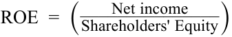

Learning Module 2 Analyzing Income Statements - Part 2: Expense Recognition
Volume 4: Financial Statement Analysis
Learning Module 2 Analyzing Income Statements
Part 2/4: Expense Recognition (PDF Pages 57–74)
Tập 4: Phân tích Báo cáo Tài chính (Financial Statement Analysis)
Học phần 2: Phân tích Báo cáo Kết quả Hoạt động Kinh doanh (Analyzing Income Statements)
Phần 2/4: Ghi nhận Chi phí (Trang PDF 57–74)
assets and liabilities and significant changes in those balances, remaining performance obligations and transaction price allocated to those obligations, and any significant judgments and changes in judgments related to revenue recognition. These disclosures are typically provided in a note to the financial statements titled “Revenue” or similar.
và những thay đổi trọng yếu trong các số dư đó, các nghĩa vụ thực hiện còn lại (remaining performance obligations) và giá giao dịch được phân bổ cho các nghĩa vụ đó, cùng bất kỳ xét đoán quan trọng nào và những thay đổi trong xét đoán liên quan đến việc ghi nhận doanh thu. Các công bố thông tin này thường được cung cấp trong một thuyết minh báo cáo tài chính có tiêu đề “Doanh thu (Revenue)” hoặc tương tự.
EXPENSE RECOGNITION
GHI NHẬN CHI PHÍ (EXPENSE RECOGNITION)
3
3
describe general principles of expense recognition, specific expense recognition applications, implications of expense recognition choices for financial analysis and contrast costs that are capitalized versus those that are expensed in the period in which they are incurred
mô tả các nguyên tắc chung về ghi nhận chi phí (expense recognition), các ứng dụng ghi nhận chi phí cụ thể, các hàm ý của việc lựa chọn chính sách ghi nhận chi phí đối với phân tích tài chính, và đối chiếu các chi phí được vốn hóa (capitalized) với các chi phí được hạch toán thẳng vào chi phí trong kỳ phát sinh (expensed)
Assume a company purchased inventory for cash and sold the entire inventory in the same period. When the company paid for the inventory, absent indications to the contrary, it is clear that inventory cost was incurred and when that inventory is sold, it should be recognized as an expense (cost of goods sold). Assume also that the company paid all operating and administrative expenses in cash within each accounting period. In such a simple hypothetical scenario, no issues of expense recognition would arise. In practice, however, as with revenue recognition, determining when expenses should be recognized can be somewhat more complex.
Giả sử một công ty mua hàng tồn kho bằng tiền mặt và bán toàn bộ số hàng tồn kho đó ngay trong cùng một kỳ. Khi công ty thanh toán tiền hàng tồn kho, nếu không có dấu hiệu nào ngược lại, rõ ràng là chi phí hàng tồn kho đã phát sinh và khi hàng tồn kho đó được bán đi, nó phải được ghi nhận là một khoản chi phí (giá vốn hàng bán – cost of goods sold [COGS]). Giả sử thêm rằng công ty đã thanh toán tất cả các chi phí hoạt động và quản lý bằng tiền mặt trong mỗi kỳ kế toán. Trong một kịch bản giả định đơn giản như vậy, sẽ không có vấn đề phức tạp nào về ghi nhận chi phí phát sinh. Tuy nhiên, trong thực tiễn, giống như việc ghi nhận doanh thu, việc xác định thời điểm ghi nhận chi phí có thể phức tạp hơn đôi chút.
General Principles
Các Nguyên tắc Chung (General Principles)
In general, a company recognizes expenses in the period that it consumes (i.e., uses up) the economic benefits associated with the expenditure, or loses some previously recognized economic benefit. The three common expense recognition models are as follows: the matching principle, expensing as incurred, and capitalization with subsequent depreciation or amortization.
Nhìn chung, một công ty ghi nhận chi phí vào kỳ mà công ty đó tiêu dùng (tức là sử dụng hết) các lợi ích kinh tế gắn liền với khoản chi tiêu đó, hoặc đánh mất một số lợi ích kinh tế đã được ghi nhận trước đó. Ba mô hình ghi nhận chi phí phổ biến như sau: nguyên tắc phù hợp (matching principle), hạch toán vào chi phí ngay khi phát sinh (expensing as incurred), và vốn hóa kèm theo khấu hao hoặc phân bổ sau đó (capitalization with subsequent depreciation or amortization).
Under matching, a company recognizes expenses (e.g., cost of goods sold) when associated revenues are recognized, and thus, expenses and revenues are matched. Associated revenues and expenses are those that result directly and jointly from the same transactions or events. Unlike the simple scenario in which a company purchases inventory and sells all of the inventory within the same accounting period, in practice, it is more likely that some of the current period’s sales are made from inventory purchased in a previous period or previous periods. It is also likely that some of the inventory purchased in the current period will remain unsold at the end of the current period and so will be sold in a following period. Matching requires that a company recognizes cost of goods sold in the same period as revenues from the sale of the goods. Strictly speaking, IFRS do not refer to a “matching principle” but rather to a “matching concept” or to a process resulting in “matching of costs with revenues.”
Theo nguyên tắc phù hợp (matching), một công ty ghi nhận các chi phí (ví dụ: giá vốn hàng bán) khi các khoản doanh thu liên quan được ghi nhận, và do đó, chi phí và doanh thu được ghép nối phù hợp với nhau. Doanh thu và chi phí có liên quan là những khoản phát sinh trực tiếp và đồng thời từ cùng một giao dịch hoặc sự kiện. Không giống như kịch bản đơn giản trong đó một công ty mua hàng tồn kho và bán hết toàn bộ số hàng tồn kho đó trong cùng một kỳ kế toán, trên thực tế, nhiều khả năng một phần doanh số bán hàng của kỳ hiện tại được thực hiện từ nguồn hàng tồn kho đã mua trong một hoặc nhiều kỳ trước đó. Cũng rất có khả năng một phần hàng tồn kho được mua trong kỳ hiện tại sẽ vẫn chưa bán được vào cuối kỳ hiện tại và do đó sẽ được bán trong một kỳ tiếp theo. Nguyên tắc phù hợp yêu cầu công ty phải ghi nhận giá vốn hàng bán trong cùng kỳ với doanh thu từ việc bán số hàng hóa đó. Nói một cách chặt chẽ, chuẩn mực IFRS không dùng thuật ngữ “nguyên tắc phù hợp (matching principle)” mà đề cập đến “khái niệm phù hợp (matching concept)” hoặc một quy trình dẫn đến “sự phù hợp giữa chi phí với doanh thu (matching of costs with revenues)”.
Example 2 demonstrate matching applied to inventory and cost of goods sold.
Ví dụ 2 minh họa nguyên tắc phù hợp được áp dụng cho hàng tồn kho và giá vốn hàng bán.
EXAMPLE 2
VÍ DỤ 2 (EXAMPLE 2)
The Matching of Inventory Costs with Revenues
Sự Phù hợp giữa Chi phí Hàng tồn kho với Doanh thu (The Matching of Inventory Costs with Revenues)
Kahn Distribution Limited (KDL), a hypothetical company, purchases inventory items for resale. At the beginning of 20X1, Kahn had no inventory on hand. During 20X1, KDL had the following transactions:
Kahn Distribution Limited (KDL), một công ty giả định, mua các mặt hàng tồn kho để bán lại. Vào đầu năm 20X1, Kahn không có sẵn hàng tồn kho đầu kỳ. Trong năm 20X1, KDL có các giao dịch mua hàng sau đây:
Inventory Purchases
Mua Hàng tồn kho (Inventory Purchases)
| First quarter | 2,000 | units at USD40 per unit |
|---|---|---|
| Second quarter | 1,500 | units at USD41 per unit |
| Third quarter | 2,200 | units at USD43 per unit |
| Fourth quarter | 1,900 | units at USD45 per unit |
| Total | 7,600 | units at a total cost of USD321,600 |
| Quý | Số lượng | Đơn giá / Tổng chi phí |
|---|---|---|
| Quý 1 (First quarter) | $2.000$ | đơn vị với giá $\text{USD } 40$ mỗi đơn vị |
| Quý 2 (Second quarter) | $1.500$ | đơn vị với giá $\text{USD } 41$ mỗi đơn vị |
| Quý 3 (Third quarter) | $2.200$ | đơn vị với giá $\text{USD } 43$ mỗi đơn vị |
| Quý 4 (Fourth quarter) | $1.900$ | đơn vị với giá $\text{USD } 45$ mỗi đơn vị |
| Tổng cộng (Total) | $7.600$ | đơn vị với tổng chi phí là $\text{USD } 321.600$ |
KDL sold 5,600 units of inventory during the year at USD50 per unit and received cash. KDL determines that there were 2,000 remaining units of inventory and specifically identifies that 1,900 were those purchased in the fourth quarter and 100 were purchased in the third quarter.
KDL đã bán $5.600$ đơn vị hàng tồn kho trong năm với giá $50\text{ USD}$ mỗi đơn vị và đã thu bằng tiền mặt. KDL xác định rằng còn lại $2.000$ đơn vị hàng tồn kho cuối kỳ và nhận diện đích danh (specifically identifies) rằng có $1.900$ đơn vị là hàng được mua trong Quý 4 và $100$ đơn vị được mua trong Quý 3.
- What are the revenue and expense associated with these transactions during 20X1 based on specific identification of inventory items as sold or remaining in inventory? (Assume that the company does not expect any products to be returned.)
- Doanh thu và chi phí gắn liền với các giao dịch này trong năm 20X1 là bao nhiêu dựa trên phương pháp thực tế đích danh (specific identification) đối với các mặt hàng tồn kho đã bán hoặc còn lại trong kho? (Giả sử rằng công ty không kỳ vọng có bất kỳ sản phẩm nào bị trả lại.)
Solution:
Lời giải:
The revenue for 20X1 would be USD280,000 (5,600 units × USD50 per unit). Initially, the total cost of the goods purchased would be recorded as inventory (an asset) in the amount of USD321,600. During 20X1, the cost of the 5,600 units sold would be expensed (matched against the revenue) while the cost of the 2,000 remaining unsold units would remain in inventory as follows:
Doanh thu cho năm 20X1 sẽ là $280.000\text{ USD}$ ($5.600\text{ đơn vị} \times 50\text{ USD/đơn vị}$). Ban đầu, tổng giá trị của số hàng hóa mua vào sẽ được ghi nhận là hàng tồn kho (một tài sản) với số tiền là $321.600\text{ USD}$. Trong năm 20X1, giá vốn của $5.600$ đơn vị đã bán sẽ được hạch toán vào chi phí (phù hợp với doanh thu) trong khi giá gốc của $2.000$ đơn vị chưa bán còn lại sẽ tiếp tục nằm trong khoản mục hàng tồn kho như sau:
Cost of Goods Sold
Giá vốn Hàng bán (Cost of Goods Sold)
| From the first quarter | 2,000 units at USD40 per unit = | USD80,000 |
|---|---|---|
| From the second quarter | 1,500 units at USD41 per unit = | USD61,500 |
| From the third quarter | 2,100 units at USD43 per unit = | USD90,300 |
| Total cost of goods sold | USD231,800 |
| Nguồn hàng | Chi tiết tính toán | Thành tiền |
|---|---|---|
| Từ Quý 1 | $2.000\text{ đơn vị} \times \text{USD } 40/\text{đơn vị} =$ | $\text{USD } 80.000$ |
| Từ Quý 2 | $1.500\text{ đơn vị} \times \text{USD } 41/\text{đơn vị} =$ | $\text{USD } 61.500$ |
| Từ Quý 3 | $2.100\text{ đơn vị} \times \text{USD } 43/\text{đơn vị} =$ | $\text{USD } 90.300$ |
| Tổng giá vốn hàng bán (Total cost of goods sold) | $\text{USD } 231.800$ |
| Cost of Goods Remaining in Inventory | |
|---|---|
| From the third quarter 100 units at USD43 per unit = |
USD4,300 |
| From the fourth quarter 1,900 units at USD45 per unit = |
USD85,500 |
| Total remaining (or ending) inventory cost | USD89,800 |
| Giá trị Hàng hóa Còn lại trong Kho (Cost of Goods Remaining in Inventory) | |
|---|---|
| Từ Quý 3: $100\text{ đơn vị} \times \text{USD } 43/\text{đơn vị} =$ | $\text{USD } 4.300$ |
| Từ Quý 4: $1.900\text{ đơn vị} \times \text{USD } 45/\text{đơn vị} =$ | $\text{USD } 85.500$ |
| Tổng giá trị hàng tồn kho còn lại (hoặc cuối kỳ) (Total remaining/ending inventory cost) | $\text{USD } 89.800$ |
To confirm that total costs are accounted for: USD231,800 + USD89,800 = USD321,600. The cost of the goods sold would be expensed against the revenue of USD280,000 as follows:
Để xác nhận rằng tổng chi phí đã được hạch toán đầy đủ: $\text{USD } 231.800 + \text{USD } 89.800 = \text{USD } 321.600$. Giá vốn hàng bán sẽ được hạch toán làm chi phí đối ứng với doanh thu $280.000\text{ USD}$ như sau:
| Revenue | USD280,000 |
|---|---|
| Cost of Goods Sold | 231,800 |
| Gross Profit | 48,200 |
| Khoản mục | Số tiền |
|---|---|
| Doanh thu (Revenue) | $\text{USD } 280.000$ |
| Giá vốn hàng bán (Cost of Goods Sold) | $231.800$ |
| Lợi nhuận gộp (Gross Profit) | $48.200$ |
An alternative way to think about this is that the company created an asset (inventory) of USD321,600 as it made its purchases. At the end of the period, the value of the company’s inventory on hand is USD89,800. Therefore, the amount of the Cost of goods sold expense recognized for the period should be the difference: USD231,800.
Một cách suy nghĩ khác về vấn đề này là công ty đã tạo ra một tài sản (hàng tồn kho) trị giá $321.600\text{ USD}$ khi thực hiện mua hàng. Vào cuối kỳ, giá trị hàng tồn kho hiện có trong tay công ty là $89.800\text{ USD}$. Do đó, số tiền chi phí Giá vốn hàng bán được ghi nhận cho kỳ đó phải là phần chênh lệch: $231.800\text{ USD}$.
The remaining inventory amount of USD89,800 will be matched against revenue in a future year when the inventory items are sold.
Giá trị hàng tồn kho còn lại là $89.800\text{ USD}$ sẽ được kết chuyển phù hợp với doanh thu vào một năm trong tương lai khi các mặt hàng tồn kho này được bán đi.
Period costs , expenditures that less directly match revenues, are generally expensed as incurred (i.e., either when the company makes the expenditure in cash or incurs the liability to pay). Costs associated with administrative, managerial, information technology (IT), and research and development activities as well as the maintenance or repair of assets generally fit this model. For most companies, payroll expenses are accounted for this way, excluding employees whose compensation is considered a product cost and recognized as inventory and later cost of goods sold or items like sales commissions, which are capitalized and expensed systematically or with sales.
Chi phí thời kỳ (Period costs), tức là các khoản chi tiêu ít gắn kết trực tiếp hơn với doanh thu, nhìn chung được hạch toán thẳng vào chi phí ngay khi phát sinh (expensed as incurred — tức là khi công ty thực hiện chi tiêu bằng tiền mặt hoặc phát sinh nghĩa vụ nợ phải trả). Các chi phí liên quan đến hoạt động hành chính, quản lý, công nghệ thông tin (IT), nghiên cứu và phát triển (R&D) cũng như bảo trì hoặc sửa chữa thông thường của tài sản nhìn chung đều thuộc mô hình này. Đối với hầu hết các công ty, chi phí tiền lương (payroll expenses) được hạch toán theo cách này, ngoại trừ những nhân viên mà thù lao của họ được coi là chi phí sản phẩm (product cost) và được ghi nhận vào giá trị hàng tồn kho rồi sau đó trở thành giá vốn hàng bán, hoặc các khoản mục như hoa hồng bán hàng (sales commissions), vốn được vốn hóa và phân bổ vào chi phí một cách có hệ thống hoặc cùng với doanh thu bán hàng.
Capitalization versus Expensing
Vốn hóa đối chiếu với Hạch toán Chi phí trong kỳ (Capitalization versus Expensing)
Finally, certain expenditures are capitalized as assets on the balance sheet and typically appear as an investing cash outflow on the statement of cash flows. After initial recognition, a company expenses the capitalized amount over the asset’s useful life as depreciation or amortization expense (except assets that are not depreciated, i.e., land, or amortized, e.g., intangible assets with indefinite lives). This expense reduces net income on the income statement and reduces the value of the asset on the balance sheet. Depreciation and amortization are non-cash expenses and therefore, apart from their effect on taxable income and taxes payable, they have no impact on the cash flow statement.
Cuối cùng, một số khoản chi tiêu nhất định được vốn hóa (capitalized) thành tài sản trên bảng cân đối kế toán và thường xuất hiện dưới dạng dòng tiền chi ra từ hoạt động đầu tư (investing cash outflow) trên báo cáo lưu chuyển tiền tệ. Sau khi ghi nhận ban đầu, công ty phân bổ số tiền đã vốn hóa đó vào chi phí trong suốt thời gian sử dụng hữu ích (useful life) của tài sản dưới dạng chi phí khấu hao tài sản hữu hình (depreciation expense) hoặc chi phí phân bổ/hao mòn tài sản vô hình (amortization expense) (ngoại trừ những tài sản không trích khấu hao, tức là đất đai [land], hoặc không phân bổ, ví dụ: các tài sản vô hình có thời gian sử dụng không xác định [intangible assets with indefinite lives]). Khoản chi phí này làm giảm lợi nhuận ròng trên báo cáo kết quả hoạt động kinh doanh và làm giảm giá trị ghi sổ của tài sản trên bảng cân đối kế toán. Khấu hao và phân bổ là các chi phí phi tiền mặt (non-cash expenses) và do đó, ngoài tác động của chúng đối với thu nhập chịu thuế (taxable income) và thuế phải nộp (taxes payable), chúng không có tác động trực tiếp nào đến báo cáo lưu chuyển tiền tệ.
This model is a form of the matching principle, whereby expenses are recognized on the income statement over the expected useful life of the investment, so the costs and benefits are “matched.” Example 3 illustrates the impact on the financial statements of capitalizing versus expensing an expenditure.
Mô hình này là một dạng của nguyên tắc phù hợp, theo đó chi phí được ghi nhận trên báo cáo kết quả hoạt động kinh doanh trải dài trong suốt thời gian sử dụng hữu ích dự kiến của khoản đầu tư, để chi phí và lợi ích kinh tế được “phù hợp” với nhau. Ví dụ 3 minh họa tác động lên các báo cáo tài chính của việc vốn hóa đối chiếu với việc hạch toán thẳng vào chi phí trong kỳ đối với một khoản chi tiêu.
EXAMPLE 3
VÍ DỤ 3 (EXAMPLE 3)
General Financial Statement Impact of Capitalizing versus Expensing
Tác động Chung lên Báo cáo Tài chính của Vốn hóa đối chiếu với Hạch toán Chi phí trong kỳ (General Financial Statement Impact of Capitalizing versus Expensing)
Assume two identical (hypothetical) companies, CAP Inc. (CAP) and NOW Inc. (NOW), start with EUR1,000 cash and EUR1,000 common stock. Each year the companies recognize total revenues of EUR1,500 cash and make cash expenditures, excluding an equipment purchase, of EUR500. At the beginning of operations, each company pays EUR900 to purchase equipment. CAP estimates the equipment will have a useful life of three years and an estimated salvage value of EUR0 at the end of the three years. NOW estimates a much shorter useful life and expenses the equipment immediately. The companies have no other assets and make no other asset purchases during the three-year period. Assume the companies pay no dividends, earn zero interest on cash balances, have a tax rate of 30 percent, and use the same accounting method for financial and tax purposes.
Giả sử có hai công ty (giả định) giống hệt nhau, CAP Inc. (CAP) và NOW Inc. (NOW), bắt đầu hoạt động với $1.000\text{ EUR}$ tiền mặt và $1.000\text{ EUR}$ vốn cổ phần phổ thông (common stock). Mỗi năm, hai công ty đều ghi nhận tổng doanh thu bằng tiền mặt là $1.500\text{ EUR}$ và thực hiện các khoản chi tiêu bằng tiền mặt (không bao gồm giao dịch mua thiết bị) là $500\text{ EUR}$. Khi bắt đầu đi vào hoạt động, mỗi công ty chi trả $900\text{ EUR}$ để mua thiết bị. CAP ước tính thiết bị này sẽ có thời gian sử dụng hữu ích là 3 năm và giá trị thanh lý ước tính (estimated salvage value) là $0\text{ EUR}$ vào cuối năm thứ 3. NOW ước tính thời gian sử dụng hữu ích ngắn hơn rất nhiều và hạch toán toàn bộ giá trị thiết bị vào chi phí ngay lập tức. Hai công ty không có tài sản nào khác và không thực hiện mua sắm tài sản nào khác trong suốt giai đoạn 3 năm. Giả sử hai công ty không trả cổ tức, hưởng lãi suất bằng $0$ trên số dư tiền mặt, chịu mức thuế suất $30\%$, và sử dụng cùng một phương pháp kế toán cho cả mục đích báo cáo tài chính và mục đích tính thuế.
The left side of Exhibit 1 shows CAP’s financial statements—that is, with the expenditure capitalized and depreciated at EUR300 per year based on the straight-line method of depreciation (EUR900 cost minus EUR0 salvage value equals EUR900, divided by a three-year life equals EUR300 per year). The right side of the exhibit shows NOW’s financial statements, with the entire EUR900 expenditure treated as an expense in the first year. All amounts are in euro.
Phía bên trái của Bảng 1 (Exhibit 1) trình bày báo cáo tài chính của CAP — tức là khi khoản chi tiêu được vốn hóa và trích khấu hao ở mức $300\text{ EUR}$ mỗi năm dựa trên phương pháp khấu hao đường thẳng ($900\text{ EUR}$ nguyên giá trừ đi $0\text{ EUR}$ giá trị thanh lý bằng $900\text{ EUR}$, chia cho thời gian sử dụng 3 năm bằng $300\text{ EUR}$ mỗi năm). Phía bên phải của bảng trình bày báo cáo tài chính của NOW, với toàn bộ khoản chi tiêu $900\text{ EUR}$ được xử lý là chi phí ngay trong năm đầu tiên. Tất cả các số tiền đều tính bằng đồng euro ($\text{EUR}$).
Exhibit 1: Capitalizing versus Expensing
Bảng 1: Vốn hóa đối chiếu với Hạch toán Chi phí trong kỳ (Exhibit 1: Capitalizing versus Expensing)
| CAP | Inc. | NOW | Inc. | ||||||
|---|---|---|---|---|---|---|---|---|---|
| Capitalize E | UR900 as | Asset and D | epreciat | e | Expe | nse EUR9 | 00 Immedia | tely | |
| For Year | 1 | 2 | 3 | For Year | 1 | 2 | 3 | ||
| Revenue | 1,500 | 1,500 | 1,500 | Revenue | 1,500 | 1,500 | 1,500 | ||
| Cash Expenses | 500 | 500 | 500 | Cash expenses | 1,400 | 500 | 500 | ||
| Depreciation | 300 | 300 | 300 | Depreciation | 0 | 0 | 0 | ||
| Income before | 700 | 700 | 700 | Income before | 100 | 1,000 | 1,000 | ||
| Tax | Tax | ||||||||
| Tax at 30% | 210 | 210 | 210 | Tax at 30% | 30 | 300 | 300 | ||
| Net Income | 490 | 490 | 490 | Net Income | 70 | 700 | 700 | ||
| Cash from | 790 | 790 | 790 | Cash from | 70 | 700 | 700 | ||
| Operations | Operations | ||||||||
| Cash Used in Investing |
(900) | 0 | 0 | Cash Used in Investing |
0 | 0 | 0 | ||
| Total Change in Cash |
(110) | 790 | 790 | Total Change in Cash |
70 | 700 | 700 | ||
| As of | Time 0 | End of Year 1 |
End of Year 2 |
End of Year 3 |
Time | Time 0 | End of Year 1 |
End of Year 2 |
End of Year 3 |
| Cash | 1,000 | 890 | 1,680 | 2,470 | Cash | 1,000 | 1,070 | 1,770 | 2,470 |
| PP&E (net) | — | 600 | 300 | — | PP & E (net) | — | — | — | — |
| Total Assets | 1,000 | 1,490 | 1,980 | 2,470 | Total Assets | 1,000 | 1,070 | 1,770 | 2,470 |
| Retained Earnings | 0 | 490 | 980 | 1,470 | Retained Earnings | 0 | 70 | 770 | 1,470 |
| Common Stock | 1,000 | 1,000 | 1,000 | 1,000 | Common Stock | 1,000 | 1,000 | 1,000 | 1,000 |
| Total Shareholders’ Equity |
1,000 | 1,490 | 1,980 | 2,470 | Total Shareholders’ Equity |
1,000 | 1,070 | 1,770 | 2,470 |
| CAP Inc. (Vốn hóa 900 EUR thành Tài sản và Khấu hao) | NOW Inc. (Hạch toán Chi phí 900 EUR Ngay lập tức) | |||||
|---|---|---|---|---|---|---|
| Cho Năm (For Year) | 1 | 2 | 3 | 1 | 2 | 3 |
| Doanh thu (Revenue) | $1.500$ | $1.500$ | $1.500$ | $1.500$ | $1.500$ | $1.500$ |
| Chi phí bằng tiền mặt (Cash Expenses) | $500$ | $500$ | $500$ | $1.400$ | $500$ | $500$ |
| Khấu hao (Depreciation) | $300$ | $300$ | $300$ | $0$ | $0$ | $0$ |
| Thu nhập trước thuế (Income before Tax) | $700$ | $700$ | $700$ | $100$ | $1.000$ | $1.000$ |
| Thuế ở mức $30\%$ (Tax at 30%) | $210$ | $210$ | $210$ | $30$ | $300$ | $300$ |
| Lợi nhuận ròng (Net Income) | $490$ | $490$ | $490$ | $70$ | $700$ | $700$ |
| Dòng tiền từ hoạt động kinh doanh (Cash from Operations) | $790$ | $790$ | $790$ | $70$ | $700$ | $700$ |
| Tiền chi cho hoạt động đầu tư (Cash Used in Investing) | $(900)$ | $0$ | $0$ | $0$ | $0$ | $0$ |
| Tổng thay đổi tiền mặt (Total Change in Cash) | $(110)$ | $790$ | $790$ | $70$ | $700$ | $700$ |
- Which company reports higher net income over the three years? Total cash flow? Cash from operations?
| Bảng Cân đối Kế toán Tại thời điểm (As of) | Thời điểm 0 | Cuối Năm 1 | Cuối Năm 2 | Cuối Năm 3 | Thời điểm 0 | Cuối Năm 1 | Cuối Năm 2 | Cuối Năm 3 |
|---|---|---|---|---|---|---|---|---|
| CAP Inc. | NOW Inc. | |||||||
| Tiền mặt (Cash) | $1.000$ | $890$ | $1.680$ | $2.470$ | $1.000$ | $1.070$ | $1.770$ | $2.470$ |
| Tài sản cố định ròng (PP&E net) | — | $600$ | $300$ | — | — | — | — | — |
| Tổng Tài sản (Total Assets) | $1.000$ | $1.490$ | $1.980$ | $2.470$ | $1.000$ | $1.070$ | $1.770$ | $2.470$ |
| Lợi nhuận giữ lại (Retained Earnings) | $0$ | $490$ | $980$ | $1.470$ | $0$ | $70$ | $770$ | $1.470$ |
| Cổ phần phổ thông (Common Stock) | $1.000$ | $1.000$ | $1.000$ | $1.000$ | $1.000$ | $1.000$ | $1.000$ | $1.000$ |
| Tổng Vốn chủ sở hữu (Total Shareholders’ Equity) | $1.000$ | $1.490$ | $1.980$ | $2.470$ | $1.000$ | $1.070$ | $1.770$ | $2.470$ |
- Công ty nào báo cáo tổng lợi nhuận ròng cao hơn trong suốt 3 năm? Tổng dòng tiền (Total cash flow)? Dòng tiền từ hoạt động kinh doanh (Cash from operations)?
Solution:
Lời giải:
Neither company reports higher total net income or cash flow over the three years. The sum of net income over the three years is identical (EUR1,470 total) whether the EUR900 is capitalized or expensed. Also, the sum of the change in cash (EUR1,470 total) is identical under either scenario. CAP reports higher cash from operations by an amount of EUR900 because, under the capitalization scenario, the EUR900 purchase is treated as an investing cash flow.
Không có công ty nào báo cáo tổng lợi nhuận ròng hoặc tổng dòng tiền cao hơn xét trên tổng thể cả 3 năm. Tổng lợi nhuận ròng cộng dồn trong 3 năm là hoàn toàn giống nhau (tổng cộng $1.470\text{ EUR}$) cho dù khoản $900\text{ EUR}$ được vốn hóa hay hạch toán thẳng vào chi phí. Ngoài ra, tổng mức thay đổi tiền mặt cộng dồn (tổng cộng $1.470\text{ EUR}$) cũng giống hệt nhau dưới cả hai kịch bản. Tuy nhiên, CAP báo cáo dòng tiền từ hoạt động kinh doanh (CFO) cao hơn một khoản đúng bằng $900\text{ EUR}$ bởi vì, dưới kịch bản vốn hóa, giao dịch mua $900\text{ EUR}$ được phân loại là dòng tiền chi cho hoạt động đầu tư (investing cash flow – CFI).
Note : Because the companies use the same accounting method for both financial and taxable income, absent the assumption of zero interest on cash balances, expensing the EUR900 would have resulted in higher income and cash flow for NOW because the lower taxes paid in the first year (EUR30 versus EUR210) would have allowed NOW to earn interest income on the tax savings.
Lưu ý : Bởi vì hai công ty sử dụng cùng một phương pháp kế toán cho cả thu nhập tài chính và thu nhập chịu thuế, nếu bỏ giả định lãi suất bằng 0 trên số dư tiền mặt, thì việc hạch toán chi phí ngay khoản $900\text{ EUR}$ sẽ mang lại thu nhập và dòng tiền cao hơn cho NOW bởi vì số tiền thuế phải nộp thấp hơn trong năm đầu tiên ($30\text{ EUR}$ so với $210\text{ EUR}$) sẽ cho phép NOW kiếm thêm thu nhập lãi tiền gửi trên khoản tiết kiệm thuế sớm đó (giá trị thời gian của tiền).
- Based on ROE and net profit margin, how does the profitability of the two companies compare?
- Dựa trên tỷ suất sinh lợi trên vốn chủ sở hữu (ROE) và biên lợi nhuận ròng (net profit margin), khả năng sinh lời của hai công ty so sánh với nhau như thế nào?
Solution:
Lời giải:
In general, Ending shareholders’ equity = Beginning shareholders’ equity + Net income + Other comprehensive income – Dividends + Net capital contributions from shareholders. Because the companies in this example do not have other comprehensive income, did not pay dividends, and reported no capital contributions from shareholders, Ending retained earnings = Beginning retained earnings + Net income, and Ending shareholders’ equity = Beginning shareholders’ equity + Net income.
Nhìn chung, $\text{Vốn chủ sở hữu cuối kỳ} = \text{Vốn chủ sở hữu đầu kỳ} + \text{Lợi nhuận ròng} + \text{Thu nhập toàn diện khác (OCI)} - \text{Cổ tức} + \text{Vốn góp ròng từ các cổ đông}$. Bởi vì các công ty trong ví dụ này không có thu nhập toàn diện khác, không trả cổ tức, và không báo cáo khoản góp vốn mới nào từ các cổ đông, nên $\text{Lợi nhuận giữ lại cuối kỳ} = \text{Lợi nhuận giữ lại đầu kỳ} + \text{Lợi nhuận ròng}$, và $\text{Vốn chủ sở hữu cuối kỳ} = \text{Vốn chủ sở hữu đầu kỳ} + \text{Lợi nhuận ròng}$.
ROE is calculated as Net income divided by Average shareholders’ equity, and Net profit margin is calculated as Net income divided by Total revenue. For example, CAP had Year 1 ROE of 39 percent (EUR490/[(EUR1,000 + EUR1,490)/2]), and Year 1 net profit margin of 33 percent (EUR490/ EUR1,500).
ROE được tính bằng Lợi nhuận ròng chia cho Vốn chủ sở hữu bình quân, và Biên lợi nhuận ròng được tính bằng Lợi nhuận ròng chia cho Tổng doanh thu. Ví dụ, CAP có ROE Năm 1 là $39\%$ ($\text{EUR } 490 / [(\text{EUR } 1.000 + \text{EUR } 1.490)/2]$), và biên lợi nhuận ròng Năm 1 là $33\%$ ($\text{EUR } 490 / \text{EUR } 1.500$).
| CAP | Inc. | NOW | Inc. | |||||
|---|---|---|---|---|---|---|---|---|
| Capitali | ze EUR9 Depre |
00 as A ciate |
sset a | nd | Expense EUR9 | 00 Imm | ediate | ly |
| For Year | 1 | 2 | 3 | For Year | 1 | 2 | 3 | |
| ROE | 39% | 28% | 22% | ROE | 7% | 49% | 33% | |
| Net Profit | i Margin | 33% | 33% | 33% | Net Profit Margin | 5% | 47% | 47% |
| CAP Inc. (Vốn hóa 900 EUR thành Tài sản và Khấu hao) | NOW Inc. (Hạch toán Chi phí 900 EUR Ngay lập tức) | |||||
|---|---|---|---|---|---|---|
| Cho Năm (For Year) | 1 | 2 | 3 | 1 | 2 | 3 |
| ROE | $39\%$ | $28\%$ | $22\%$ | $7\%$ | $49\%$ | $33\%$ |
| Biên lợi nhuận ròng (Net Profit Margin) | $33\%$ | $33\%$ | $33\%$ | $5\%$ | $47\%$ | $47\%$ |
As shown, compared to expensing, capitalizing results in higher profitability ratios (ROE and net profit margin) in the first year, and lower profitability ratios in subsequent years. For example, CAP’s Year 1 ROE of 39 percent was higher than NOW’s Year 1 ROE of 7 percent, but in Years 2 and 3, NOW reports superior profitability.
Như đã trình bày, so với việc hạch toán thẳng vào chi phí, việc vốn hóa dẫn đến các tỷ số sinh lời (ROE và biên lợi nhuận ròng) cao hơn trong năm đầu tiên, và các tỷ số sinh lời thấp hơn trong những năm tiếp theo. Ví dụ, ROE Năm 1 của CAP là $39\%$ cao hơn so với ROE Năm 1 của NOW là $7\%$, nhưng sang Năm 2 và Năm 3, NOW lại báo cáo khả năng sinh lời vượt trội hơn.
Note also that NOW’s superior growth in net income between Year 1 and Year 2 is not attributable to superior performance compared to CAP but rather to the accounting decision to recognize the expense sooner than CAP. In general, all else equal, accounting decisions that result in recognizing expenses sooner will give the appearance of greater subsequent growth. Comparison of the growth of the two companies’ net incomes without an awareness of the difference in accounting methods would be misleading. As a corollary, NOW’s income and profitability exhibit greater volatility across the three years, not because of more volatile performance but rather because of the different accounting decision.
Cũng cần lưu ý rằng mức tăng trưởng lợi nhuận ròng vượt trội của NOW giữa Năm 1 và Năm 2 không phải đến từ hiệu quả hoạt động kinh doanh ưu việt hơn so với CAP mà là do quyết định kế toán ghi nhận chi phí sớm hơn so với CAP. Nhìn chung, khi các yếu tố khác không đổi (all else equal), các quyết định kế toán dẫn đến việc ghi nhận chi phí sớm hơn sẽ tạo ra vẻ bề ngoài là tốc độ tăng trưởng cao hơn trong các kỳ sau đó. Việc so sánh tốc độ tăng trưởng lợi nhuận ròng của hai công ty mà không nhận thức được sự khác biệt trong phương pháp kế toán sẽ dẫn đến sự hiểu lầm sai lệch. Như một hệ quả tất yếu, thu nhập và khả năng sinh lời của NOW thể hiện mức độ biến động (volatility) lớn hơn qua ba năm, không phải vì kết quả kinh doanh thực tế biến động mạnh hơn mà là do quyết định kế toán khác nhau.
- Why does NOW report change in cash of EUR70 in Year 1, while CAP reports total change in cash of (EUR110)?
- Tại sao NOW báo cáo mức thay đổi tiền mặt là dương $70\text{ EUR}$ trong Năm 1, trong khi CAP báo cáo tổng mức thay đổi tiền mặt là âm $(110\text{ EUR})$?
Solution:
Lời giải:
NOW reports an increase in cash of EUR70 in Year 1, while CAP reports a decrease in cash of EUR110 because NOW’s taxes were EUR180 lower than CAP’s taxes (EUR30 versus EUR210).
NOW báo cáo mức tăng tiền mặt $70\text{ EUR}$ trong Năm 1, trong khi CAP báo cáo mức giảm tiền mặt $110\text{ EUR}$ bởi vì tiền thuế thu nhập của NOW thấp hơn tiền thuế của CAP một khoản là $180\text{ EUR}$ ($30\text{ EUR}$ so với $210\text{ EUR}$, chênh lệch đúng bằng $70 - (-110) = 180\text{ EUR}$).
Note that this problem assumes the accounting method used by each company for its tax purposes is identical to the accounting method used by the company for its financial reporting. In many countries, companies are allowed to use different depreciation methods for financial reporting and taxes, which may give rise to deferred taxes.
Lưu ý rằng bài toán này giả định phương pháp kế toán được mỗi công ty sử dụng cho mục đích tính thuế hoàn toàn giống với phương pháp kế toán được công ty sử dụng cho mục đích lập báo cáo tài chính. Tại nhiều quốc gia, các công ty được phép sử dụng các phương pháp khấu hao khác nhau cho báo cáo tài chính và cho mục đích tính thuế, điều này có thể làm phát sinh thuế thu nhập hoãn lại (deferred taxes).
As shown, discretion regarding whether to expense or capitalize expenditures can impede comparability across companies. Example 4 assumes the companies purchase a single asset in one year. Because the sum of net income over the three-year period is identical whether the asset is capitalized or expensed, it illustrates that although capitalizing results in higher profitability compared with expensing in the first year, it results in lower profitability in the subsequent years. Conversely, expensing results in lower profitability in the first year but higher profitability in later years, indicating a favorable trend.
Như đã thấy, quyền tự quyết liên quan đến việc hạch toán vào chi phí hay vốn hóa các khoản chi tiêu có thể cản trở khả năng so sánh giữa các công ty. Ví dụ 3 (và đoạn thảo luận dẫn sang Ví dụ 4) giả định các công ty chỉ mua một tài sản duy nhất trong một năm. Bởi vì tổng lợi nhuận ròng trong giai đoạn 3 năm là như nhau bất kể tài sản được vốn hóa hay hạch toán chi phí, ví dụ này minh họa rằng mặc dù việc vốn hóa mang lại khả năng sinh lời cao hơn so với hạch toán chi phí trong năm đầu tiên, nhưng nó lại dẫn đến khả năng sinh lời thấp hơn trong các năm tiếp theo. Ngược lại, việc hạch toán chi phí ngay dẫn đến khả năng sinh lời thấp hơn trong năm đầu tiên nhưng lại mang lại khả năng sinh lời cao hơn trong các năm sau đó, thể hiện một xu hướng tăng trưởng thuận lợi.
Similarly, shareholders’ equity for a company that capitalizes the expenditure will be higher in the early years because the initially higher profits result in initially higher retained earnings. Example 4 assumes the companies purchase a single asset in one year and report identical amounts of total net income over the three-year period, so shareholders’ equity (and retained earnings) for the firm that expenses will be identical to shareholders’ equity (and retained earnings) for the capitalizing firm at the end of the three-year period.
Tương tự, vốn chủ sở hữu của một công ty vốn hóa khoản chi tiêu sẽ cao hơn trong những năm đầu bởi vì lợi nhuận cao hơn ban đầu dẫn đến lợi nhuận giữ lại cao hơn ban đầu. Với giả định các công ty chỉ mua một tài sản duy nhất trong một năm và báo cáo tổng lợi nhuận ròng giống hệt nhau trong giai đoạn 3 năm, nên vốn chủ sở hữu (và lợi nhuận giữ lại) của công ty hạch toán chi phí ngay sẽ trở nên bằng đúng với vốn chủ sở hữu (và lợi nhuận giữ lại) của công ty vốn hóa vào thời điểm cuối giai đoạn 3 năm.
Although Example 3 shows companies purchasing an asset only in the first year, if a company continues to purchase similar or increasing amounts of assets each year, the profitability-enhancing effect of capitalizing continues if the amount of the expenditures in a period continues to be more than the depreciation expense. Example 4 illustrates this point.
Mặc dù Ví dụ 3 cho thấy các công ty chỉ mua một tài sản vào năm đầu tiên, nhưng nếu một công ty tiếp tục mua một lượng tài sản tương tự hoặc ngày càng tăng vào mỗi năm, thì hiệu ứng làm tăng khả năng sinh lời của việc vốn hóa sẽ tiếp tục duy trì chừng nào số tiền chi tiêu mua sắm trong một kỳ vẫn còn lớn hơn chi phí khấu hao. Ví dụ 4 minh họa điểm này.
EXAMPLE 4
VÍ DỤ 4 (EXAMPLE 4)
Impact of Capitalizing versus Expensing for Ongoing Purchases
Tác động của Vốn hóa đối chiếu với Hạch toán Chi phí đối với các Giao dịch Mua sắm Liên tục (Impact of Capitalizing versus Expensing for Ongoing Purchases)
A company buys a GBP300 computer in Year 1 and capitalizes the expenditure. The computer has a useful life of three years and an expected salvage value of GBP0, so the annual depreciation expense using the straight-line method is GBP100 per year. Compared with expensing the entire GBP300 immediately, the company’s pre-tax profit in Year 1 is GBP200 greater.
Một công ty mua một chiếc máy tính trị giá $300\text{ GBP}$ vào Năm 1 và vốn hóa khoản chi tiêu này. Chiếc máy tính có thời gian sử dụng hữu ích là 3 năm và giá trị thanh lý dự kiến là $0\text{ GBP}$, vì vậy chi phí khấu hao hàng năm sử dụng phương pháp đường thẳng là $100\text{ GBP}$ mỗi năm. So với việc hạch toán toàn bộ $300\text{ GBP}$ vào chi phí ngay lập tức, lợi nhuận trước thuế của công ty trong Năm 1 cao hơn $200\text{ GBP}$.
- Assume that the company continues to buy an identical computer each year at the same price. If the company uses the same accounting treatment for each of the computers, when does the profit-enhancing effect of capitalizing versus expensing end?
- Giả sử rằng công ty tiếp tục mua một chiếc máy tính giống hệt như vậy vào mỗi năm với cùng mức giá. Nếu công ty sử dụng cùng một phương pháp hạch toán kế toán cho từng chiếc máy tính, thì khi nào hiệu ứng làm tăng lợi nhuận của việc vốn hóa so với hạch toán chi phí sẽ kết thúc?
Solution:
Lời giải:
The profit-enhancing effect of capitalizing versus expensing would end in Year 3. In Year 3, the depreciation expense on each of the three computers bought in Years 1, 2, and 3 would total GBP300 (GBP100 + GBP100 + GBP100). Therefore, the total depreciation expense for Year 3 will be exactly equal to the capital expenditure in Year 3. The expense in Year 3 would be GBP300, regardless of whether the company capitalized or expensed the annual computer purchases.
Hiệu ứng làm tăng lợi nhuận của việc vốn hóa so với hạch toán chi phí sẽ kết thúc vào Năm 3. Trong Năm 3, chi phí khấu hao trên mỗi chiếc trong ba chiếc máy tính được mua vào các Năm 1, 2 và 3 sẽ có tổng cộng là $300\text{ GBP}$ ($\text{GBP } 100 + \text{GBP } 100 + \text{GBP } 100$). Do đó, tổng chi phí khấu hao cho Năm 3 sẽ bằng chính xác khoản chi tiêu vốn (capital expenditure) trong Năm 3. Chi phí ghi nhận trong Năm 3 sẽ là $300\text{ GBP}$, bất kể công ty đã vốn hóa hay hạch toán chi phí đối với các giao dịch mua máy tính hàng năm.
- If the company buys another identical computer in Year 4, using the same accounting treatment as the prior years, what is the effect on Year 4 profits of capitalizing versus expensing these expenditures?
- Nếu công ty mua thêm một chiếc máy tính giống hệt nữa vào Năm 4, sử dụng cùng phương pháp hạch toán kế toán như những năm trước, thì tác động lên lợi nhuận Năm 4 của việc vốn hóa so với hạch toán chi phí đối với các khoản chi tiêu này là gì?
Solution:
Lời giải:
There is no impact on Year 4 profits. As in the previous year, the depreciation expense on each of the three computers bought in Years 2, 3, and 4 would total GBP300 (GBP100 + GBP100 + GBP100). Therefore, the total depreciation expense for Year 4 will be exactly equal to the capital expenditure
Không có tác động chênh lệch nào lên lợi nhuận Năm 4. Giống như năm trước đó, chi phí khấu hao trên mỗi chiếc trong ba chiếc máy tính đang còn khấu hao được mua vào các Năm 2, 3 và 4 (chiếc mua Năm 1 đã hết khấu hao) sẽ có tổng cộng là $300\text{ GBP}$ ($\text{GBP } 100 + \text{GBP } 100 + \text{GBP } 100$). Do đó, tổng chi phí khấu hao cho Năm 4 sẽ bằng chính xác khoản chi tiêu vốn
in Year 4. Pre-tax profits would be reduced by GBP300, regardless of whether the company capitalized or expensed the annual computer purchases.
trong Năm 4. Lợi nhuận trước thuế sẽ giảm đi $300\text{ GBP}$, bất kể công ty vốn hóa hay hạch toán thẳng vào chi phí các giao dịch mua máy tính hàng năm.
Compared with expensing an expenditure, capitalizing the expenditure typically results in greater amounts reported as cash from operations. Analysts should be alert to evidence of companies manipulating reported cash flow from operations by capitalizing expenditures that should be expensed.
So với việc hạch toán thẳng vào chi phí một khoản chi tiêu, việc vốn hóa khoản chi tiêu đó thường dẫn đến số tiền được báo cáo là dòng tiền từ hoạt động kinh doanh (cash from operations – CFO) lớn hơn. Các nhà phân tích cần cảnh giác trước những bằng chứng cho thấy các công ty thao túng dòng tiền từ hoạt động kinh doanh được báo cáo bằng cách vốn hóa những khoản chi tiêu lẽ ra phải được hạch toán thẳng vào chi phí trong kỳ (như vụ bê bối kế toán của WorldCom).
In summary, holding all else constant, capitalizing an expenditure enhances current profitability and increases reported cash flow from operations. The profitability-enhancing effect of capitalizing continues so long as capital expenditures exceed the depreciation expense. Profitability-enhancing motivations for decisions to capitalize should be considered when analyzing performance. For example, a company may choose to capitalize more expenditures (within the allowable bounds of accounting standards) to achieve earnings targets for a given period. Expensing a cost in the period reduces current period profits but enhances future profitability and thus enhances the profit trend. Profit trend-enhancing motivations should also be considered when analyzing performance. If the company is in a reporting environment that requires identical accounting methods for financial reporting and taxes (unlike the United States, which permits companies to use depreciation methods for reporting purposes that differ from the depreciation method required by tax purposes), then expensing will have a more favorable cash flow impact because paying lower taxes in an earlier period creates an opportunity to earn interest income on the cash saved.
Tóm lại, khi giữ tất cả các yếu tố khác không đổi, việc vốn hóa một khoản chi tiêu sẽ làm tăng khả năng sinh lời hiện tại và làm tăng dòng tiền từ hoạt động kinh doanh được báo cáo. Hiệu ứng làm tăng khả năng sinh lời của việc vốn hóa sẽ còn tiếp diễn chừng nào chi tiêu vốn (capital expenditures) còn vượt quá chi phí khấu hao. Những động cơ thúc đẩy lợi nhuận đằng sau quyết định vốn hóa cần phải được cân nhắc khi phân tích kết quả hoạt động. Ví dụ, một công ty có thể chọn vốn hóa nhiều khoản chi tiêu hơn (trong phạm vi cho phép của các chuẩn mực kế toán) nhằm đạt được các chỉ tiêu lợi nhuận cho một kỳ nhất định. Việc hạch toán thẳng một khoản chi tiêu vào chi phí trong kỳ làm giảm lợi nhuận kỳ hiện tại nhưng lại nâng cao khả năng sinh lời trong tương lai và do đó làm đẹp thêm xu hướng tăng trưởng lợi nhuận (profit trend). Những động cơ làm đẹp xu hướng tăng trưởng lợi nhuận này cũng cần được xem xét khi phân tích kết quả hoạt động. Nếu công ty đang ở trong một môi trường báo cáo đòi hỏi các phương pháp kế toán giống hệt nhau cho cả báo cáo tài chính và tính thuế (không giống như Hoa Kỳ, nơi cho phép các công ty sử dụng phương pháp khấu hao cho mục đích báo cáo tài chính khác với phương pháp khấu hao bắt buộc cho mục đích tính thuế), thì việc hạch toán vào chi phí ngay sẽ có tác động dòng tiền thực tế thuận lợi hơn bởi vì việc nộp thuế thấp hơn ở kỳ sớm hơn tạo ra cơ hội kiếm được thu nhập lãi trên lượng tiền mặt tiết kiệm được từ thuế.
In contrast with these relatively simple examples, it is generally neither possible nor desirable to identify individual instances involving discretion about whether to capitalize or expense expenditures. An analyst can, however, typically identify significant items of expenditure treated differently across companies. The items of expenditure giving rise to the most relevant differences across companies will vary by industry. This cross-industry variation is apparent in the following discussion of the capitalization of expenditures.
Trái ngược với những ví dụ tương đối đơn giản này, trên thực tế nhìn chung không thể và cũng không cần thiết phải xác định từng trường hợp riêng lẻ liên quan đến quyền tự quyết về việc vốn hóa hay hạch toán chi phí. Tuy nhiên, một nhà phân tích thường có thể nhận diện các khoản mục chi tiêu trọng yếu được xử lý khác nhau giữa các công ty. Các khoản mục chi tiêu làm phát sinh những khác biệt đáng kể nhất giữa các công ty sẽ khác nhau tùy theo từng ngành. Sự khác biệt giữa các ngành này thể hiện rõ trong phần thảo luận tiếp theo về việc vốn hóa các khoản chi tiêu.
CAPITALIZATION VERSUS EXPENSING
VỐN HÓA ĐỐI CHIẾU VỚI HẠCH TOÁN CHI PHÍ (CAPITALIZATION VERSUS EXPENSING - KIỂM TRA KIẾN THỨC)
- All else equal, in the fiscal year when long-lived equipment is purchased:
-
A. depreciation expense increases.
-
B. cash from operations decreases.
-
C. net income is reduced by the amount of the purchase.
-
Solution:
- Khi các yếu tố khác không đổi, trong năm tài chính mà thiết bị dài hạn (long-lived equipment) được mua sắm (và vốn hóa): - A. chi phí khấu hao tăng lên. - B. dòng tiền từ hoạt động kinh doanh giảm xuống. - C. lợi nhuận ròng bị giảm đi đúng bằng số tiền mua sắm thiết bị.
- Lời giải:
A is correct. In the fiscal year when long-lived equipment is purchased, the assets on the balance sheet increase and depreciation expense on the income statement increases because of the new long-lived asset.
A là đáp án đúng. Trong năm tài chính khi thiết bị dài hạn được mua sắm, tài sản trên bảng cân đối kế toán tăng lên và chi phí khấu hao trên báo cáo kết quả hoạt động kinh doanh tăng lên do có thêm tài sản dài hạn mới này.
- Companies X and Z have the same beginning-of-the-year book value of equity and the same tax rate. The companies have identical transactions throughout the year and report all transactions similarly except for one. Both companies acquire a GBP300,000 printer with a three-year useful life and a salvage value of GBP0 on 1 January of the new year. Company X capitalizes the printer and depreciates it on a straight-line basis, and Company
- Hai công ty X và Z có cùng giá trị sổ sách vốn chủ sở hữu đầu năm và cùng mức thuế suất. Hai công ty có các giao dịch giống hệt nhau trong suốt cả năm và báo cáo tất cả các giao dịch tương tự nhau ngoại trừ một giao dịch duy nhất. Cả hai công ty đều mua một máy in trị giá $300.000\text{ GBP}$ có thời gian sử dụng hữu ích là 3 năm và giá trị thanh lý bằng $0\text{ GBP}$ vào ngày 1 tháng 1 của năm mới. Công ty X vốn hóa máy in và trích khấu hao theo phương pháp đường thẳng, còn Công ty
Z expenses the printer. The year-end information in Exhibit 2 is gathered for Company X.
Z hạch toán toàn bộ máy in vào chi phí trong kỳ. Thông tin cuối năm trong Bảng 2 được thu thập cho Công ty X.
Exhibit 2: Company X Year-End Information
Bảng 2: Thông tin Cuối năm của Công ty X (Exhibit 2: Company X Year-End Information)
| Company X as of 31 December | |
|---|---|
| Ending Shareholders’ Equity | GBP10,000,000 |
| Tax Rate | 25% |
| Dividends | GBP0.00 |
| Net Income | GBP750,000 |
| Khoản mục | Công ty X tại ngày 31 tháng 12 |
|---|---|
| Vốn chủ sở hữu cuối kỳ (Ending Shareholders’ Equity) | $\text{GBP } 10.000.000$ |
| Thuế suất (Tax Rate) | $25\%$ |
| Cổ tức (Dividends) | $\text{GBP } 0,00$ |
| Lợi nhuận ròng (Net Income) | $\text{GBP } 750.000$ |
Based on the information in Exhibit 2, Company Z’s return on equity using year-end equity will be closest to:
A. 5.4 percent.
Dựa trên thông tin trong Bảng 2, tỷ suất sinh lợi trên vốn chủ sở hữu (ROE) của Công ty Z sử dụng vốn chủ sở hữu cuối năm sẽ gần nhất với mức:
- B. 6.1 percent.
C. 7.5 percent.
- A. $5,4\%$.
- B. $6,1\%$.
- C. $7,5\%$.
Solution:
Lời giải:
B is correct. Company Z’s return on equity based on year-end equity value will be 6.1 percent. Company Z will have an additional GBP200,000 of expenses compared with Company X. Company Z expensed the printer for GBP300,000 rather than capitalizing the printer and having a depreciation expense of GBP100,000 like Company X. Company Z’s net income and shareholders’ equity will be GBP150,000 lower (= GBP200,000 × 0.75) than that of Company X.
B là đáp án đúng. Tỷ suất sinh lợi trên vốn chủ sở hữu (ROE) của Công ty Z dựa trên giá trị vốn chủ sở hữu cuối năm sẽ là $6,1\%$. Công ty Z sẽ có thêm $200.000\text{ GBP}$ chi phí trước thuế so với Công ty X. Công ty Z đã hạch toán chi phí máy in là $300.000\text{ GBP}$ thay vì vốn hóa máy in và chỉ chịu chi phí khấu hao $100.000\text{ GBP}$ như Công ty X. Do đó, lợi nhuận ròng và vốn chủ sở hữu cuối kỳ của Công ty Z sẽ thấp hơn $150.000\text{ GBP}$ ($= \text{GBP } 200.000 \times (1 - 0,25) = \text{GBP } 200.000 \times 0,75$) so với Công ty X: - Lợi nhuận ròng của Công ty Z $= \text{GBP } 750.000 - \text{GBP } 150.000 = \text{GBP } 600.000$. - Vốn chủ sở hữu cuối kỳ của Công ty Z $= \text{GBP } 10.000.000 - \text{GBP } 150.000 = \text{GBP } 9.850.000$.

-
= GBP 600,00/ GBP 9,850,000
-
= 0.61 = 6.1%.
- $= \frac{\text{GBP } 600.000}{\text{GBP } 9.850.000}$
- $= 0,0609 \approx 6,1\%$.
The following information relates to questions 3-6.
Thông tin sau đây liên quan đến các câu hỏi từ 3 đến 6.
Melanie Hart, CFA, is a transportation analyst. Hart has been asked to write a research report on Altai Mountain Rail Company (AMRC). Like other companies in the railroad industry, AMRC’s operations are capital intensive, with significant investments in such long-lived tangible assets as property, plant, and equipment. In November 2008, AMRC’s board of directors hired a new team to manage the company. In reviewing the company’s 2009 annual report, Hart is concerned about some of the accounting choices that the new management has made. These choices differ from those of the previous management and from common industry practice. Hart has highlighted the following statements from the company’s annual report:
Melanie Hart, CFA, là một nhà phân tích ngành giao thông vận tải. Hart được yêu cầu viết một báo cáo nghiên cứu về Công ty Đường sắt Núi Altai (Altai Mountain Rail Company – AMRC). Giống như các công ty khác trong ngành đường sắt, hoạt động của AMRC thâm dụng vốn lớn (capital intensive), với những khoản đầu tư đáng kể vào các tài sản hữu hình dài hạn như bất động sản, nhà xưởng và thiết bị. Vào tháng 11 năm 2008, hội đồng quản trị của AMRC đã thuê một đội ngũ quản lý mới để điều hành công ty. Khi xem xét báo cáo thường niên năm 2009 của công ty, Hart bày tỏ sự quan ngại về một số lựa chọn kế toán mà ban điều hành mới đã thực hiện. Những lựa chọn này khác với lựa chọn của ban điều hành tiền nhiệm và khác với thông lệ chung của ngành. Hart đã đánh dấu nổi bật các tuyên bố sau đây từ báo cáo thường niên của công ty:
-
Statement 1 “In 2009, AMRC spent significant amounts on track replacement and similar improvements. AMRC expensed rather than capitalized a significant proportion of these expenditures.”
-
Statement 2 “AMRC uses the straight-line method of depreciation for both financial and tax reporting purposes to account for plant and equipment.”
-
Tuyên bố 1: “Trong năm 2009, AMRC đã chi những khoản tiền đáng kể cho việc thay thế đường ray và các cải tiến tương tự. AMRC đã hạch toán thẳng vào chi phí trong kỳ thay vì vốn hóa một tỷ trọng lớn các khoản chi tiêu này.”
-
Tuyên bố 2: “AMRC sử dụng phương pháp khấu hao đường thẳng cho cả mục đích báo cáo tài chính và báo cáo thuế để hạch toán nhà xưởng và thiết bị.”
Statement 3 “In 2009, AMRC recognized an impairment loss of EUR50 million on a fleet of locomotives. The impairment loss was reported as ‘other income’ in the income statement and reduced the carrying amount of the assets on the balance sheet.” Exhibit 3 and 4 contain AMRC’s 2009 consolidated income statement and balance sheet. AMRC prepares its financial statements in accordance with International Financial Reporting Standards.
- Tuyên bố 3: “Trong năm 2009, AMRC đã ghi nhận một khoản lỗ suy giảm giá trị (impairment loss) là $50\text{ triệu EUR}$ đối với một đội tàu đầu máy xe lửa. Khoản lỗ suy giảm giá trị này được báo cáo trong mục ‘thu nhập khác (other income)’ trên báo cáo kết quả hoạt động kinh doanh và làm giảm giá trị ghi sổ của tài sản trên bảng cân đối kế toán.” Bảng 3 và Bảng 4 chứa báo cáo kết quả hoạt động kinh doanh và bảng cân đối kế toán hợp nhất năm 2009 của AMRC. AMRC lập báo cáo tài chính theo Chuẩn mực Báo cáo Tài chính Quốc tế (IFRS).
Bảng 3: Báo cáo Kết quả Hoạt động Kinh doanh Hợp nhất (Exhibit 3: Consolidated Statement of Income)
Exhibit 3: Consolidated Statement of Income
| Cho các Năm Kết thúc Ngày 31 tháng 12 | 2009 (Triệu Euro) | 2009 (% Doanh thu) | 2008 (Triệu Euro) | 2008 (% Doanh thu) |
|---|---|---|---|---|
| Doanh thu hoạt động (Operating revenues) | $2.600$ | $100,0$ | $2.300$ | $100,0$ |
| Chi phí hoạt động (Operating expenses) | ||||
| Khấu hao (Depreciation) | $(200)$ | $(7,7)$ | $(190)$ | $(8,3)$ |
| Chi phí hoạt động khác (Other operating expense) | $(1.590)$ | $(61,1)$ | $(1.515)$ | $(65,9)$ |
| Tổng chi phí hoạt động (Total operating expenses) | $(1.790)$ | $(68,8)$ | $(1.705)$ | $(74,2)$ |
| Thu nhập hoạt động (Operating income) | $810$ | $31,2$ | $595$ | $25,8$ |
| Thu nhập khác (Other income) | $(50)$ | $(1,9)$ | — | $0,0$ |
| Chi phí lãi vay (Interest expense) | $(73)$ | $(2,8)$ | $(69)$ | $(3,0)$ |
| Thu nhập trước thuế (Income before taxes) | $687$ | $26,5$ | $526$ | $22,8$ |
| Thuế thu nhập (Income taxes) | $(272)$ | $(10,5)$ | $(198)$ | $(8,6)$ |
| Lợi nhuận ròng (Net income) | $415$ | $16,0$ | $328$ | $14,2$ |
| For the Years Ended 31 December | 20 Euro Millions |
09 Revenues (%) |
20 Euro Millions |
08 Revenues (%) |
|---|---|---|---|---|
| Operating revenues | 2,600 | 100.0 | 2,300 | 100.0 |
| Operating expenses | ||||
| Depreciation | (200) | (7.7) | (190) | (8.3) |
| Other operating expense | (1,590) | (61.1) | (1,515) | (65.9) |
| Total operating expenses | (1,790) | (68.8) | (1,705) | (74.2) |
| Operating income | 810 | 31.2 | 595 | 25.8 |
| Other income | (50) | (1.9) | — | 0.0 |
| Interest expense | (73) | (2.8) | (69) | (3.0) |
| Income before taxes | 687 | 26.5 | 526 | 22.8 |
| Income taxes | (272) | (10.5) | (198) | (8.6) |
| Net income Exhibit 4: Consolidated Balance |
415 Sheet |
16 | 328 | 14.2 |
| As of 31 December | 20 | 09 | 20 | 08 |
| Assets | Euro Millions | Assets (%) | Euro Millions | |
| Current assets | 500 | 9.4 | 450 | 8.5 |
| Property and equipment: | ||||
| Land | 700 | 13.1 | 700 | 13.2 |
| Plant and equipment | 6,000 | 112.1 | 5,800 | 109.4 |
| Total property and equipment | 6,700 | 125.2 | 6,500 | 122.6 |
| Accumulated depreciation | (1,850) | (34.6) | (1,650) | (31.1) |
| Net property and equipment | 4,850 | 90.6 | 4,850 | 91.5 |
| Total assets | 5,350 | 100.0 | 5,300 | 100.0 |
| Liabilities and Shareholders’ Equity |
||||
| Current liabilities | 480 | 9.0 | 430 | 8.1 |
| Long-term debt | 1,030 | 19.3 | 1,080 | 20.4 |
| Other long-term provisions and | 1,240 | 23.1 | 1,440 | 27.2 |
| liabilities | ||||
| Total liabilities | 2,750 | 51.4 | 2,950 | 55.7 |
Bảng 4: Bảng Cân đối Kế toán Hợp nhất (Exhibit 4: Consolidated Balance Sheet)
| Tại ngày 31 tháng 12 | 2009 (Triệu Euro) | 2009 (% Tài sản) | 2008 (Triệu Euro) | 2008 (% Tài sản) |
|---|---|---|---|---|
| Tài sản (Assets) | ||||
| Tài sản ngắn hạn (Current assets) | $500$ | $9,4$ | $450$ | $8,5$ |
| Bất động sản và thiết bị (Property and equipment): | ||||
| Đất đai (Land) | $700$ | $13,1$ | $700$ | $13,2$ |
| Nhà xưởng và thiết bị (Plant and equipment) | $6.000$ | $112,1$ | $5.800$ | $109,4$ |
| Tổng bất động sản và thiết bị nguyên giá (Total property and equipment) | $6.700$ | $125,2$ | $6.500$ | $122,6$ |
| Khấu hao lũy kế (Accumulated depreciation) | $(1.850)$ | $(34,6)$ | $(1.650)$ | $(31,1)$ |
| Bất động sản và thiết bị ròng (Net property and equipment) | $4.850$ | $90,6$ | $4.850$ | $91,5$ |
| Tổng tài sản (Total assets) | $5.350$ | $100,0$ | $5.300$ | $100,0$ |
| Nợ phải trả và Vốn chủ sở hữu (Liabilities and Shareholders’ Equity) | ||||
| Nợ ngắn hạn (Current liabilities) | $480$ | $9,0$ | $430$ | $8,1$ |
| Nợ dài hạn (Long-term debt) | $1.030$ | $19,3$ | $1.080$ | $20,4$ |
| Các khoản dự phòng và nợ phải trả dài hạn khác (Other long-term provisions and liabilities) | $1.240$ | $23,1$ | $1.440$ | $27,2$ |
| Tổng nợ phải trả (Total liabilities) | $2.750$ | $51,4$ | $2.950$ | $55,7$ |
| Liabilities and Shareholders’ Equity |
||||
|---|---|---|---|---|
| Shareholders’ equity | ||||
| Common stock and paid-in-surplus | 760 | 14.2 | 760 | 14.3 |
| Retained earnings | 1,888 | 35.5 | 1,600 | 30.2 |
| Other comprehensive losses | (48) | (0.9) | (10) | (0.2) |
| Total shareholders’ equity | 2,600 | 48.6 | 2,350 | 44.3 |
| Total liabilities & shareholders’ equity |
5,350 | 100.0 | 5,300 | 100.0 |
| Nợ phải trả và Vốn chủ sở hữu (tiếp theo) | 2009 (Triệu Euro) | 2009 (% Tài sản) | 2008 (Triệu Euro) | 2008 (% Tài sản) |
|---|---|---|---|---|
| Vốn chủ sở hữu (Shareholders’ equity) | ||||
| Cổ phần phổ thông và thặng dư vốn cổ phần (Common stock and paid-in-surplus) | $760$ | $14,2$ | $760$ | $14,3$ |
| Lợi nhuận giữ lại (Retained earnings) | $1.888$ | $35,5$ | $1.600$ | $30,2$ |
| Lỗ toàn diện khác lũy kế (Other comprehensive losses) | $(48)$ | $(0,9)$ | $(10)$ | $(0,2)$ |
| Tổng vốn chủ sở hữu (Total shareholders’ equity) | $2.600$ | $48,6$ | $2.350$ | $44,3$ |
| Tổng nợ phải trả & vốn chủ sở hữu (Total liabilities & shareholders’ equity) | $5.350$ | $100,0$ | $5.300$ | $100,0$ |
- With respect to Statement 1, which of the following is the most likely effect of management’s decision to expense rather than capitalize these expenditures?
-
A. 2009 net profit margin is higher than if the expenditures had been capitalized.
-
B. 2009 total asset turnover is lower than if the expenditures had been capitalized.
-
C. Future profit growth will be higher than if the expenditures had been capitalized.
- Liên quan đến Tuyên bố 1, điều nào sau đây là tác động có khả năng cao nhất từ quyết định của ban điều hành trong việc hạch toán vào chi phí thay vì vốn hóa các khoản chi tiêu này? - A. Biên lợi nhuận ròng năm 2009 cao hơn so với trường hợp các khoản chi tiêu được vốn hóa. - B. Vòng quay tổng tài sản (total asset turnover) năm 2009 thấp hơn so với trường hợp các khoản chi tiêu được vốn hóa. - C. Tăng trưởng lợi nhuận trong tương lai sẽ cao hơn so với trường hợp các khoản chi tiêu được vốn hóa.
Solution:
Lời giải:
C is correct. Expensing rather than capitalizing an investment in long-term assets will result in higher expenses and lower net income and net profit margin in the current year. Future years’ incomes will not include depreciation expense related to these expenditures. Consequently, year-to-year growth in profitability will be higher. If the expenses had been capitalized, the carrying amount of the assets would have been higher and the 2009 total asset turnover would have been lower.
C là đáp án đúng. Việc hạch toán thẳng vào chi phí thay vì vốn hóa một khoản đầu tư vào tài sản dài hạn sẽ dẫn đến chi phí cao hơn cùng lợi nhuận ròng và biên lợi nhuận ròng thấp hơn trong năm hiện tại (2009). Tuy nhiên, thu nhập của những năm tương lai sẽ không phải gánh chi phí khấu hao liên quan đến các khoản chi tiêu này. Do đó, tốc độ tăng trưởng khả năng sinh lời qua các năm sau sẽ cao hơn. Nếu các khoản chi tiêu này được vốn hóa, giá trị ghi sổ của tài sản sẽ cao hơn và vòng quay tổng tài sản năm 2009 ($\text{Doanh thu} / \text{Tổng tài sản}$) sẽ thấp hơn (chứ không phải khi hạch toán chi phí thì vòng quay thấp hơn).
- With respect to Statement 2, what would be the most likely effect in 2010 if AMRC were to switch to an accelerated depreciation method for both financial and tax reporting?
-
A. Net profit margin would increase.
-
B. Total asset turnover would decrease.
-
C. Cash flow from operating activities would increase.
-
Solution:
- Liên quan đến Tuyên bố 2, tác động có khả năng cao nhất trong năm 2010 sẽ là gì nếu AMRC chuyển sang phương pháp khấu hao nhanh (accelerated depreciation method) cho cả báo cáo tài chính và báo cáo thuế? - A. Biên lợi nhuận ròng sẽ tăng lên. - B. Vòng quay tổng tài sản sẽ giảm xuống. - C. Dòng tiền từ hoạt động kinh doanh sẽ tăng lên.
- Lời giải:
C is correct. In 2010, switching to an accelerated depreciation method would increase depreciation expense and decrease income before taxes, taxes payable, and net income. Cash flow from operating activities would increase because of the resulting tax savings.
C là đáp án đúng. Trong năm 2010, việc chuyển sang phương pháp khấu hao nhanh sẽ làm tăng chi phí khấu hao và làm giảm thu nhập trước thuế, giảm thuế phải nộp và giảm lợi nhuận ròng. Dòng tiền từ hoạt động kinh doanh (CFO) sẽ tăng lên nhờ khoản tiết kiệm tiền thuế thực nộp phát sinh từ chi phí khấu hao cao hơn.
- With respect to Statement 3, what is the most likely effect of the impairment loss?
-
A. Net income in years prior to 2009 was likely understated.
-
B. Net profit margins in years after 2009 will likely exceed the 2009 net profit margin.
- Liên quan đến Tuyên bố 3, tác động có khả năng cao nhất của khoản lỗ suy giảm giá trị (impairment loss) là gì? - A. Lợi nhuận ròng trong những năm trước năm 2009 nhiều khả năng đã bị ghi nhận thấp hơn thực tế (understated). - B. Biên lợi nhuận ròng trong những năm sau năm 2009 nhiều khả năng sẽ vượt mức biên lợi nhuận ròng năm 2009.
| C.Cash flow from operating activities in 2009 was likely lower due to the impairment loss. Solution: |
|---|
| B is correct. 2009 net income and net profit margin are lower because of the impairment loss. Consequently, net profit margins in subsequent years are likely to be higher. An impairment loss suggests that insufficient deprecia- tion expense was recognized in prior years, and net income was overstated in prior years. The impairment loss is a non-cash item and will not affect operating cash flows. |
| 6. Based on Exhibit 1 and 2, the_best estimate_of the average remaining useful life of the company’s plant and equipment at the end of 2009 is: |
| A.20.75 years. |
| B.24.25 years. |
| C.30.00 years. Solution: |
| A is correct. The estimated average remaining useful life is 20.75 years. |
| h Estimate of remaining useful life = Net plant and equipment ÷ Annual de- preciation expense |
| Net plant and equipment = Gross P & E – Accumulated depreciation = €6000 – €1850 = €4150 |
| Estimate of remaining useful life = Net P & E ÷ Depreciation expense = €4150 ÷ €200 = 20.75 |
- C. Dòng tiền từ hoạt động kinh doanh năm 2009 nhiều khả năng đã thấp hơn do khoản lỗ suy giảm giá trị.
Lời giải:
Capitalization of Interest Costs
B là đáp án đúng. Lợi nhuận ròng và biên lợi nhuận ròng năm 2009 thấp hơn do phải gánh khoản lỗ suy giảm giá trị ($50\text{ triệu EUR}$). Hệ quả là biên lợi nhuận ròng trong những năm tiếp theo nhiều khả năng sẽ cao hơn (do không còn khoản lỗ một lần này và chi phí khấu hao hàng năm sau đó cũng giảm xuống vì giá trị ghi sổ tài sản đã giảm). Một khoản lỗ suy giảm giá trị cho thấy rằng chi phí khấu hao đã không được ghi nhận đủ trong những năm trước đó, và do đó lợi nhuận ròng đã bị ghi nhận cao hơn thực tế (overstated) trong những năm trước. Khoản lỗ suy giảm giá trị là một khoản mục phi tiền mặt (non-cash item) và sẽ không ảnh hưởng đến dòng tiền hoạt động kinh doanh.
- Dựa trên Bảng 3 và Bảng 4, ước tính tốt nhất về thời gian sử dụng hữu ích còn lại bình quân (average remaining useful life) của nhà xưởng và thiết bị của công ty vào cuối năm 2009 là: - A. $20,75$ năm. - B. $24,25$ năm. - C. $30,00$ năm.
Companies generally must capitalize interest costs associated with acquiring or constructing an asset that requires a long period of time to get ready for its intended use
Lời giải:
A là đáp án đúng. Thời gian sử dụng hữu ích còn lại bình quân ước tính là $20,75$ năm.
As a consequence of this accounting treatment, a company’s interest costs for a period can appear either on the balance sheet (to the extent they are capitalized) or on the income statement (to the extent they are expensed).
Vốn hóa Chi phí Lãi vay (Capitalization of Interest Costs)
If the interest expenditure is incurred in connection with constructing an asset for the company’s own use, the capitalized interest appears on the balance sheet as a part of the relevant long-lived asset. The capitalized interest is expensed over time as the property is depreciated—and is thus part of depreciation expense rather than interest expense. If the interest expenditure is incurred in connection with constructing an asset to sell, for example, by a real estate construction company, the capitalized interest appears on the company’s balance sheet as part of inventory. The capitalized interest is then expensed as part of the cost of sales when the asset is sold.
Nhìn chung, các công ty bắt buộc phải vốn hóa chi phí lãi vay (capitalize interest costs) gắn liền với việc mua sắm hoặc xây dựng một tài sản đòi hỏi một khoảng thời gian dài để sẵn sàng đưa vào sử dụng theo mục đích định trước (qualifying asset - tài sản dở dang đủ điều kiện vốn hóa).
Như một hệ quả của phương pháp hạch toán kế toán này, chi phí lãi vay của một công ty trong một kỳ có thể xuất hiện hoặc ở trên bảng cân đối kế toán (trong chừng mực chúng được vốn hóa) hoặc ở trên báo cáo kết quả hoạt động kinh doanh (trong chừng mực chúng được hạch toán thẳng vào chi phí trong kỳ).
The treatment of capitalized interest poses certain issues that analysts should consider. First, capitalized interest appears as part of investing cash outflows, whereas expensed interest typically reduces operating cash flow. US GAAP–reporting companies are required to categorize interest in operating cash flow, and IFRS-reporting companies can categorize expensed interest in operating, or financing cash flows. Although the treatment is consistent with accounting standards, an analyst may want to examine the impact on reported cash flows. Second, interest coverage ratios are solvency indicators measuring the extent to which a company’s earnings (or cash flow) in a period covered its interest costs. To provide a true picture of a company’s interest coverage, the entire amount of interest expenditure, both the capitalized portion and
Nếu khoản chi tiêu lãi vay phát sinh liên quan đến việc xây dựng một tài sản phục vụ cho nhu cầu sử dụng của chính công ty, phần lãi vay được vốn hóa (capitalized interest) sẽ xuất hiện trên bảng cân đối kế toán như một phần nguyên giá của tài sản dài hạn có liên quan đó. Lãi vay được vốn hóa sẽ được phân bổ vào chi phí dần theo thời gian khi bất động sản/tài sản đó được trích khấu hao — và do đó trở thành một phần của chi phí khấu hao (depreciation expense) thay vì chi phí lãi vay (interest expense). Nếu khoản chi tiêu lãi vay phát sinh liên quan đến việc xây dựng một tài sản để bán, ví dụ như bởi một công ty xây dựng bất động sản thương mại, thì lãi vay được vốn hóa sẽ xuất hiện trên bảng cân đối kế toán của công ty như một phần của hàng tồn kho (inventory). Khi đó, lãi vay được vốn hóa sẽ được hạch toán vào chi phí như một phần của giá vốn hàng bán (cost of sales) khi tài sản đó được bán đi.
Cách thức hạch toán lãi vay vốn hóa đặt ra một số vấn đề nhất định mà các nhà phân tích cần phải xem xét. Thứ nhất, lãi vay được vốn hóa xuất hiện như một phần của dòng tiền chi ra từ hoạt động đầu tư (investing cash outflows), trong khi lãi vay hạch toán vào chi phí trong kỳ thường làm giảm dòng tiền từ hoạt động kinh doanh (operating cash flow). Các công ty báo cáo theo US GAAP bắt buộc phải phân loại tiền lãi đã trả vào dòng tiền hoạt động kinh doanh, và các công ty báo cáo theo IFRS có thể phân loại tiền lãi hạch toán chi phí vào dòng tiền hoạt động kinh doanh hoặc dòng tiền hoạt động tài chính (financing cash flows). Mặc dù cách xử lý này nhất quán với các chuẩn mực kế toán, một nhà phân tích có thể muốn kiểm tra tác động của nó lên các dòng tiền được báo cáo. Thứ hai, các tỷ số thanh toán lãi vay (interest coverage ratios) là các chỉ báo về khả năng thanh toán dài hạn (solvency indicators) đo lường mức độ mà lợi nhuận (hoặc dòng tiền) của một công ty trong kỳ đủ để trang trải chi phí lãi vay của nó. Để mang lại một bức tranh thực chất về khả năng thanh toán lãi vay của một công ty, toàn bộ số tiền chi tiêu lãi vay, bao gồm cả phần được vốn hóa và
the expensed portion, should be used to calculate interest coverage ratios. Additionally, if a company is depreciating interest that it capitalized in a previous period, income should be adjusted to eliminate the effect of that depreciation. Example 5 illustrates the calculations.
phần được hạch toán chi phí trong kỳ, cần phải được sử dụng để tính toán các tỷ số thanh toán lãi vay. Ngoài ra, nếu một công ty đang trích khấu hao phần lãi vay mà họ đã vốn hóa trong một kỳ trước đó, thu nhập (EBIT) cần phải được điều chỉnh cộng ngược lại để loại bỏ tác động của phần khấu hao lãi vay đó. Ví dụ 5 minh họa các phép tính này.
EXAMPLE 5
VÍ DỤ 5 (EXAMPLE 5)
Effect of Capitalized Interest Costs on Coverage Ratios and Cash Flow
Tác động của Chi phí Lãi vay được Vốn hóa lên các Tỷ số Thanh toán Lãi vay và Dòng tiền (Effect of Capitalized Interest Costs on Coverage Ratios and Cash Flow)
Melco Resorts & Entertainment Limited (NASDAQ: MLCO), a Hong Kong SAR–based casino company, which is listed on the NASDAQ stock exchange and prepares financial reports under US GAAP, disclosed the following information in one of the footnotes to its 2017 financial statements: “Interest and amortization of deferred financing costs associated with major development and construction projects is capitalized and included in the cost of the project. . . . Total interest expenses incurred amounted to $267,065, $252,600, and $253,168, of which $37,483, $29,033, and $134,838 were capitalized during the years ended December 31, 2017, 2016, and 2015, respectively. Amortization of deferred financing costs of $26,182, $48,345, and $38,511, net of amortization capitalized of nil, nil, and $5,458, were recorded during the years ended December 31, 2017, 2016, and 2015, respectively” (Form 20-F filed 12 April 2018). Cash payments for deferred financing costs were reported in cash flows from financing activities.
Melco Resorts & Entertainment Limited (NASDAQ: MLCO), một công ty sòng bạc có trụ sở tại Đặc khu Hành chính Hồng Kông, niêm yết trên sàn giao dịch chứng khoán NASDAQ và lập báo cáo tài chính theo US GAAP, đã công bố thông tin sau đây tại một trong các thuyết minh báo cáo tài chính năm 2017 của mình: “Lãi vay và khoản phân bổ chi phí thu xếp tài chính hoãn lại (amortization of deferred financing costs) gắn liền với các dự án phát triển và xây dựng lớn được vốn hóa và tính vào nguyên giá của dự án. . . . Tổng chi phí lãi vay phát sinh lên tới $267.065\text{ USD}$, $252.600\text{ USD}$ và $253.168\text{ USD}$ (nghìn USD), trong đó có $37.483\text{ USD}$, $29.033\text{ USD}$ và $134.838\text{ USD}$ đã được vốn hóa trong các năm kết thúc vào ngày 31 tháng 12 năm 2017, 2016 và 2015 tương ứng. Khoản phân bổ chi phí tài chính hoãn lại ở mức $26.182\text{ USD}$, $48.345\text{ USD}$ và $38.511\text{ USD}$, sau khi đã trừ đi phần phân bổ được vốn hóa là bằng không (nil), bằng không (nil) và $5.458\text{ USD}$, đã được ghi nhận trong các năm kết thúc vào ngày 31 tháng 12 năm 2017, 2016 và 2015 tương ứng” (Biểu mẫu 20-F nộp ngày 12 tháng 4 năm 2018). Các khoản chi trả bằng tiền mặt cho chi phí tài chính hoãn lại được báo cáo trong dòng tiền từ hoạt động tài chính.
Exhibit 5: Melco Resorts and Entertainment Limited Selected Data, as Reported (US dollar thousands)
Bảng 5: Dữ liệu Chọn lọc của Melco Resorts and Entertainment Limited, theo Báo cáo (Nghìn đô la Mỹ)
| 2017 | 2016 | 2015 | |
|---|---|---|---|
| EBIT (from income statement) | 544,865 | 298,663 | 58,553 |
| Interest expense (from income statement) |
229,582 | 223,567 | 118,330 |
| Capitalized interest (from footnote) | 37,483 | 29,033 | 134,838 |
| Amortization of deferred financing costs (from footnote) |
26,182 | 48,345 | 38,511 |
| Net cash provided by operating activities | 1,162,500 | 1,158,128 | 522,026 |
| Net cash from (used) in investing activities |
(410,226) | 280,604 | (469,656) |
| Net cash from (used) in financing activities |
(1,046,041) | (1,339,717) | (29,688) |
| Khoản mục | 2017 | 2016 | 2015 |
|---|---|---|---|
| EBIT (từ báo cáo kết quả hoạt động kinh doanh) | $544.865$ | $298.663$ | $58.553$ |
| Chi phí lãi vay (Interest expense - từ báo cáo kết quả kinh doanh) | $229.582$ | $223.567$ | $118.330$ |
| Lãi vay được vốn hóa (Capitalized interest - từ thuyết minh) | $37.483$ | $29.033$ | $134.838$ |
| Phân bổ chi phí tài chính hoãn lại (Amortization of deferred financing costs - từ thuyết minh) | $26.182$ | $48.345$ | $38.511$ |
| Lưu chuyển tiền thuần từ hoạt động kinh doanh (Net cash provided by operating activities) | $1.162.500$ | $1.158.128$ | $522.026$ |
| Lưu chuyển tiền thuần từ (sử dụng vào) hoạt động đầu tư (Net cash from/used in investing activities) | $(410.226)$ | $280.604$ | $(469.656)$ |
| Lưu chuyển tiền thuần từ (sử dụng vào) hoạt động tài chính (Net cash from/used in financing activities) | $(1.046.041)$ | $(1.339.717)$ | $(29.688)$ |
Notes: EBIT represents “Income (Loss) Before Income Tax” plus “Interest expenses, net of capitalized interest” from the income statement.
Ghi chú: EBIT đại diện cho “Thu nhập (Lỗ) Trước Thuế Thu nhập” cộng với “Chi phí lãi vay, đã trừ lãi vay vốn hóa” lấy từ báo cáo kết quả hoạt động kinh doanh.
- Calculate and interpret Melco’s interest coverage ratio with and without capitalized interest.
- Tính toán và diễn giải tỷ số thanh toán lãi vay (interest coverage ratio) của Melco khi không có và khi có điều chỉnh cho lãi vay được vốn hóa.
Solution:
Lời giải:
Interest coverage ratios with and without capitalized interest were as follows:
Các tỷ số thanh toán lãi vay khi có và không có điều chỉnh cho lãi vay được vốn hóa lần lượt như sau:
For 2017
Cho năm 2017:
2.37 (USD544,865 ÷ USD229,582) without adjusting for capitalized interest; and
2.14 [(USD544,865 + USD26,182) ÷ (USD229,582 + USD37,483)], including an adjustment to EBIT for depreciation of previously capitalized interest and an adjustment to interest expense for the amount of interest capitalized in 2017.
-
$2,37$ lần ($\text{USD } 544.865 \div \text{USD } 229.582$) khi không điều chỉnh cho lãi vay được vốn hóa; và
-
$2,14$ lần ($[\text{USD } 544.865 + \text{USD } 26.182] \div [\text{USD } 229.582 + \text{USD } 37.483]$), bao gồm một khoản điều chỉnh cộng vào EBIT đối với phần khấu hao/phân bổ của chi phí tài chính/lãi vay đã vốn hóa trước đó và một khoản điều chỉnh cộng vào chi phí lãi vay đối với số tiền lãi vay được vốn hóa trong năm 2017.
For 2016
Cho năm 2016:
1.34 (USD298,663÷ USD223,567) without adjusting for capitalized interest; and
1.37 [(USD298,663 + USD48,345) ÷ (USD223,567 + USD29,033)], including an adjustment to EBIT for depreciation of previously capitalized interest and an adjustment to interest expense for the amount of interest capitalized in 2016.
-
$1,34$ lần ($\text{USD } 298.663 \div \text{USD } 223.567$) khi không điều chỉnh cho lãi vay được vốn hóa; và
-
$1,37$ lần ($[\text{USD } 298.663 + \text{USD } 48.345] \div [\text{USD } 223.567 + \text{USD } 29.033]$), bao gồm khoản điều chỉnh vào EBIT đối với phần phân bổ của lãi vay/chi phí tài chính đã vốn hóa trước đó và khoản điều chỉnh vào chi phí lãi vay đối với số tiền lãi vay được vốn hóa trong năm 2016.
For 2015
Cho năm 2015:
0.49 (USD58,533÷ USD118,330) without adjusting for capitalized interest; and
-
$0,49$ lần ($\text{USD } 58.553 \div \text{USD } 118.330$) khi không điều chỉnh cho lãi vay được vốn hóa; và
-
$0,38$ lần ($[\text{USD } 58.553 + \text{USD } 38.511] \div [\text{USD } 118.330 + \text{USD } 134.838]$), bao gồm khoản điều chỉnh vào EBIT đối với phần phân bổ của lãi vay/chi phí tài chính đã vốn hóa trước đó và khoản điều chỉnh vào chi phí lãi vay đối với số tiền lãi vay được vốn hóa trong năm 2015.
0.38 [(USD58,533 + USD38,511) ÷ (USD118,330+ USD134,838)], including an adjustment to EBIT for depreciation of previously capitalized interest and an adjustment to interest expense for the amount of interest capitalized in 2015.
These calculations indicate that Melco’s interest coverage improved in 2017 compared with the previous two years. In both 2017 and 2015, the coverage ratio was lower when adjusted for capitalized interest.
Các phép tính này chỉ ra rằng khả năng thanh toán lãi vay của Melco đã cải thiện rõ rệt trong năm 2017 so với hai năm trước đó. Trong cả hai năm 2017 và 2015, tỷ số thanh toán lãi vay đều thấp hơn sau khi được điều chỉnh cho lãi vay vốn hóa.
- Calculate Melco’s percentage change in operating cash flow from 2016 to 2017. Assuming the financial reporting does not affect reporting for income taxes, what were the effects of capitalized interest on operating and investing cash flows?
- Tính toán tỷ lệ phần trăm thay đổi trong dòng tiền hoạt động kinh doanh của Melco từ năm 2016 sang năm 2017. Giả sử báo cáo tài chính không làm ảnh hưởng đến báo cáo thuế thu nhập, tác động của lãi vay vốn hóa đối với dòng tiền hoạt động kinh doanh và dòng tiền hoạt động đầu tư là gì?
Solution:
Lời giải:
If the interest had been expensed rather than capitalized, operating cash flows would have been lower in all three years. On an adjusted basis, but not an unadjusted basis, the company’s operating cash flow declined in 2017 compared with 2016. On an unadjusted basis, for 2017 compared with 2016, Melco’s operating cash flow increased by 0.4 percent in 2017 [(USD1,162,500 ÷ USD1,158,128) – 1]. Including adjustments to expense all interest costs, Melco’s operating cash flow also decreased by 0.4 percent in 2017 {[USD1,162,500 – USD37,483) ÷ (USD1,158,128 – USD29,033)] – 1}. If the interest had been expensed rather than capitalized, financing cash flows would have been higher in all three years.
Nếu khoản lãi vay này được hạch toán thẳng vào chi phí thay vì vốn hóa, dòng tiền hoạt động kinh doanh (operating cash flows) sẽ thấp hơn trong cả ba năm. Trên cơ sở đã điều chỉnh (nhưng không phải trên cơ sở chưa điều chỉnh), dòng tiền hoạt động kinh doanh của công ty đã sụt giảm trong năm 2017 so với năm 2016: - Trên cơ sở chưa điều chỉnh, năm 2017 so với năm 2016, dòng tiền hoạt động kinh doanh của Melco đã tăng $0,4\%$ trong năm 2017 ($[(\text{USD } 1.162.500 \div \text{USD } 1.158.128) - 1] = +0,38\% \approx +0,4\%$). - Khi bao gồm các điều chỉnh để hạch toán toàn bộ chi phí lãi vay vào chi phí trong kỳ, dòng tiền hoạt động kinh doanh của Melco lại giảm $0,4\%$ trong năm 2017 ($\{[\text{USD } 1.162.500 - \text{USD } 37.483] \div [\text{USD } 1.158.128 - \text{USD } 29.033]\} - 1 = [\text{USD } 1.125.017 \div \text{USD } 1.129.095] - 1 = -0,36\% \approx -0,4\%$). Nếu lãi vay được hạch toán vào chi phí thay vì vốn hóa, dòng tiền hoạt động đầu tư (hoặc tài chính, tùy phân loại dòng tiền chi mua sắm dự án) sẽ cao hơn (ít âm hơn) một khoản tương ứng trong cả ba năm.
The treatment of capitalized interest raises issues for consideration by an analyst. First, capitalized interest appears as part of investing cash outflows, whereas expensed interest reduces operating or financing cash flow under IFRS and operating cash flow under US GAAP. An analyst may want to examine the impact on reported cash flows of interest expenditures when comparing companies. Second, interest coverage ratios are solvency indicators measuring the extent to which a company’s earnings (or cash
Cách thức xử lý lãi vay được vốn hóa đặt ra những vấn đề cần nhà phân tích cân nhắc. Thứ nhất, lãi vay được vốn hóa xuất hiện như một phần của dòng tiền chi ra từ hoạt động đầu tư, trong khi lãi vay hạch toán vào chi phí làm giảm dòng tiền hoạt động kinh doanh hoặc dòng tiền hoạt động tài chính theo IFRS và làm giảm dòng tiền hoạt động kinh doanh theo US GAAP. Nhà phân tích có thể muốn kiểm tra tác động của các khoản chi tiêu lãi vay lên dòng tiền được báo cáo khi so sánh các công ty. Thứ hai, các tỷ số thanh toán lãi vay là các chỉ báo khả năng thanh toán dài hạn đo lường mức độ mà lợi nhuận (hoặc dòng
flow) in a period covered its interest costs. To provide a true picture of a company’s interest coverage, the entire amount of interest, both the capitalized portion and the expensed portion, should be used in calculating interest coverage ratios.
tiền) của công ty trong một kỳ đủ trang trải các chi phí lãi vay của nó. Để cung cấp một bức tranh trung thực về khả năng thanh toán lãi vay của công ty, toàn bộ số tiền lãi vay, bao gồm cả phần được vốn hóa và phần được hạch toán chi phí, phải được sử dụng khi tính toán các tỷ số thanh toán lãi vay.
Generally, including capitalized interest in the calculation of interest coverage ratios provides a better assessment of a company’s solvency. In assigning credit ratings, rating agencies include capitalized interest in coverage ratios. For example, Standard & Poor’s calculates the EBIT interest coverage ratio as EBIT divided by gross interest (defined as interest prior to deductions for capitalized interest or interest income).
Nhìn chung, việc đưa lãi vay được vốn hóa vào trong phép tính các tỷ số thanh toán lãi vay giúp mang lại sự đánh giá tốt hơn về khả năng thanh toán dài hạn (solvency) của một công ty. Khi ấn định mức xếp hạng tín nhiệm, các tổ chức xếp hạng tín nhiệm luôn tính cả phần lãi vay được vốn hóa vào trong các tỷ số thanh toán lãi vay. Ví dụ, Standard & Poor’s tính toán tỷ số thanh toán lãi vay từ EBIT bằng cách lấy EBIT chia cho tổng lãi vay gộp (gross interest — được định nghĩa là tiền lãi trước khi khấu trừ phần lãi vay được vốn hóa hoặc thu nhập lãi).
Maintaining a minimum interest coverage ratio is a financial covenant often included in lending agreements (e.g., bank loans and bond indentures). The definition of the coverage ratio can be found in the company’s credit agreement. The definition is relevant because treatment of capitalized interest in calculating coverage ratios would affect an assessment of how close a company’s actual ratios are to the levels specified by its financial covenants and thus the probability of breaching those covenants.
Việc duy trì một tỷ số thanh toán lãi vay tối thiểu là một điều khoản cam kết tài chính (financial covenant) thường được đưa vào trong các hợp đồng vay vốn (ví dụ: các khoản vay ngân hàng và khế ước trái phiếu [bond indentures]). Định nghĩa cụ thể về tỷ số thanh toán lãi vay có thể được tìm thấy trong hợp đồng tín dụng của công ty. Định nghĩa này rất quan trọng bởi vì cách thức xử lý lãi vay được vốn hóa khi tính toán các tỷ số thanh toán lãi vay sẽ ảnh hưởng đến việc đánh giá xem các tỷ số thực tế của công ty đang tiến gần đến mức nào so với các ngưỡng quy định bởi các cam kết tài chính của nó và do đó ảnh hưởng đến xác suất vi phạm các cam kết đó (probability of breaching covenants).
Capitalization of Internal Development Costs
Vốn hóa Chi phí Triển khai Nội bộ (Capitalization of Internal Development Costs)
Accounting standards require companies to capitalize software development costs after a product’s feasibility is established. Despite this requirement, judgment in determining feasibility means that companies’ capitalization practices may differ. For example, as illustrated in Exhibit 6, Microsoft judges product feasibility to be established very shortly before manufacturing begins and, therefore, effectively expenses—rather than capitalizes—research and development costs.
Các chuẩn mực kế toán yêu cầu các công ty phải vốn hóa chi phí phát triển phần mềm (software development costs) sau khi tính khả thi về mặt kỹ thuật/công nghệ (technological feasibility) của một sản phẩm đã được thiết lập. Bất chấp yêu cầu này, sự xét đoán chủ quan trong việc xác định thời điểm đạt được tính khả thi đồng nghĩa với việc thông lệ vốn hóa của các công ty có thể rất khác nhau. Ví dụ, như được minh họa trong Bảng 6 (Exhibit 6), Microsoft xét đoán rằng tính khả thi của sản phẩm chỉ được thiết lập ngay sát trước khi quá trình sản xuất thương mại bắt đầu và do đó, trên thực tế công ty hạch toán toàn bộ chi phí nghiên cứu và phát triển vào chi phí trong kỳ — thay vì vốn hóa.
Exhibit 6: Disclosure on Software Development Costs
Bảng 6: Thuyết minh về Chi phí Phát triển Phần mềm (Exhibit 6: Disclosure on Software Development Costs)
Excerpt from Management’s Discussion and Analysis (MD&A) of Microsoft Corporation, Application of Critical Accounting Policies, Research and Development Costs:
Trích đoạn từ phần Thảo luận và Phân tích của Ban Điều hành (MD&A) của Tập đoàn Microsoft, Áp dụng các Chính sách Kế toán Trọng yếu, Chi phí Nghiên cứu và Phát triển:
Costs incurred internally in researching and developing a computer software product are charged to expense until technological feasibility has been established for the product. Once technological feasibility is established, all software costs are capitalized until the product is available for general release to customers. Judgment is required in determining when technological feasibility of a product is established. We have determined that technological feasibility for our software products is reached after all high-risk development issues have been resolved through coding and testing. Generally, this occurs shortly before the products are released to production. The amortization of these costs is included in cost of revenue over the estimated life of the products.
Các chi phí phát sinh nội bộ trong quá trình nghiên cứu và phát triển một sản phẩm phần mềm máy tính được tính thẳng vào chi phí trong kỳ cho đến khi tính khả thi về mặt công nghệ (technological feasibility) đã được thiết lập cho sản phẩm đó. Một khi tính khả thi về mặt công nghệ được thiết lập, tất cả các chi phí phần mềm đều được vốn hóa cho đến khi sản phẩm sẵn sàng để phát hành rộng rãi cho khách hàng. Cần có sự xét đoán trong việc xác định thời điểm tính khả thi về mặt công nghệ của một sản phẩm được thiết lập. Chúng tôi đã xác định rằng tính khả thi về mặt công nghệ đối với các sản phẩm phần mềm của chúng tôi đạt được sau khi tất cả các vấn đề phát triển có rủi ro cao đã được giải quyết thông qua việc lập trình mã hóa (coding) và kiểm thử (testing). Nhìn chung, điều này xảy ra ngay sát trước khi các sản phẩm được đưa vào sản xuất phát hành. Khoản phân bổ (amortization) của các chi phí này được tính vào giá vốn doanh thu trong suốt vòng đời ước tính của các sản phẩm.
Source: Microsoft Corporation, 2017 Annual Report on Form 10-K, p. 45.
Nguồn: Microsoft Corporation, Báo cáo Thường niên năm 2017 theo Biểu mẫu 10-K, trang 45.
Expensing rather than capitalizing development costs results in lower net income in the current period. Expensing rather than capitalizing will continue to result in lower net income so long as the amount of the current-period development expenses is higher than the amortization expense that would have resulted from amortizing prior periods’ capitalized development costs—the typical situation when a company’s development costs are increasing. On the statement of cash flows, expensing rather than capitalizing development costs results in lower net operating cash flows and higher net investing cash flows. This is because the development costs are reflected as operating cash outflows rather than investing cash outflows.
Việc hạch toán thẳng vào chi phí thay vì vốn hóa các chi phí phát triển dẫn đến lợi nhuận ròng thấp hơn trong kỳ hiện tại. Việc hạch toán chi phí thay vì vốn hóa sẽ tiếp tục dẫn đến lợi nhuận ròng thấp hơn chừng nào số tiền chi phí phát triển của kỳ hiện tại vẫn còn cao hơn chi phí phân bổ (amortization expense) sẽ phát sinh từ việc phân bổ các chi phí phát triển đã vốn hóa của các kỳ trước — đây là tình huống điển hình khi chi phí phát triển của một công ty đang ngày càng tăng lên. Trên báo cáo lưu chuyển tiền tệ, việc hạch toán chi phí thay vì vốn hóa chi phí phát triển dẫn đến dòng tiền thuần từ hoạt động kinh doanh (net operating cash flows) thấp hơn và dòng tiền thuần từ hoạt động đầu tư (net investing cash flows) cao hơn (ít âm hơn). Điều này là bởi vì các chi phí phát triển được phản ánh là dòng tiền chi ra từ hoạt động kinh doanh thay vì dòng tiền chi ra từ hoạt động đầu tư.
In comparing the financial performance of a company that expenses most or all software development costs, such as Microsoft, with another company that capitalizes software development costs, adjustments can be made to make the two comparable. For the company that capitalizes software development costs, an analyst can adjust (1) the income statement to include software development costs as an expense and to exclude amortization of prior years’ software development costs; (2) the balance sheet to exclude capitalized software (decrease assets and equity); and (3) the statement of cash flows to decrease operating cash flows and decrease cash used in investing by the amount of the current period development costs. Any ratios that include income, long-lived assets, or cash flow from operations—such as return on equity—also will be affected.
Khi so sánh kết quả hoạt động tài chính của một công ty hạch toán hầu hết hoặc toàn bộ chi phí phát triển phần mềm vào chi phí trong kỳ, chẳng hạn như Microsoft, với một công ty khác vốn hóa chi phí phát triển phần mềm, nhà phân tích có thể thực hiện các điều chỉnh để làm cho hai công ty có thể so sánh được với nhau. Đối với công ty vốn hóa chi phí phát triển phần mềm, nhà phân tích có thể điều chỉnh: (1) báo cáo kết quả hoạt động kinh doanh để đưa chi phí phát triển phần mềm phát sinh trong kỳ vào làm chi phí và loại trừ đi chi phí phân bổ phần mềm đã vốn hóa của các năm trước; (2) bảng cân đối kế toán để loại trừ tài sản phần mềm được vốn hóa (làm giảm tài sản và giảm vốn chủ sở hữu); và (3) báo cáo lưu chuyển tiền tệ để làm giảm dòng tiền hoạt động kinh doanh và làm giảm lượng tiền chi cho hoạt động đầu tư một khoản đúng bằng số tiền chi phí phát triển của kỳ hiện tại. Bất kỳ tỷ số tài chính nào có bao gồm lợi nhuận, tài sản dài hạn, hoặc dòng tiền từ hoạt động kinh doanh — chẳng hạn như tỷ suất sinh lợi trên vốn chủ sở hữu (ROE) — cũng sẽ bị ảnh hưởng theo.
EXAMPLE 6
VÍ DỤ 6 (EXAMPLE 6)
Chi phí Phát triển Phần mềm (Software Development Costs)
Software Development Costs
Bạn đang làm việc trong một dự án liên quan đến việc phân tích JHH Software, một công ty phát triển phần mềm (giả định) đã thiết lập được tính khả thi về mặt kỹ thuật cho sản phẩm đầu tiên của mình vào năm 2017. Một phần trong phân tích của bạn bao gồm việc tính toán một số tỷ số định giá dựa trên thị trường (market-based ratios), mà bạn sẽ sử dụng để so sánh JHH với một công ty khác hạch toán toàn bộ các khoản chi tiêu phát triển phần mềm của mình vào chi phí trong kỳ. Dữ liệu liên quan và các trích đoạn từ báo cáo thường niên của công ty được trình bày trong Bảng 7 (Exhibit 7).
You are working on a project involving the analysis of JHH Software, a (hypothetical) software development company that established technical feasibility for its first product in 2017. Part of your analysis involves computing certain market-based ratios, which you will use to compare JHH to another company that expenses all of its software development expenditures. Relevant data and excerpts from the company’s annual report are included in Exhibit 7.
Bảng 7: JHH SOFTWARE (Nghìn đô la Mỹ, ngoại trừ các số liệu trên mỗi cổ phần)
Exhibit 7: JHH SOFTWARE (US dollar thousands, except per share amounts)
| Báo cáo Kết quả Hoạt động Kinh doanh Hợp nhất — Rút gọn (Consolidated Statement of Earnings—Abbreviated) | |||
|---|---|---|---|
| Cho Năm Kết thúc Ngày 31 tháng 12: | 2018 | 2017 | 2016 |
| Tổng doanh thu (Total revenue) | $\text{USD } 91.424$ | $\text{USD } 91.134$ | $\text{USD } 96.293$ |
| Tổng chi phí hoạt động (Total operating expenses) | $78.107$ | $78.908$ | $85.624$ |
| Thu nhập hoạt động (Operating income) | $13.317$ | $12.226$ | $10.669$ |
| Dự phòng thuế thu nhập (Provision for income taxes) | $3.825$ | $4.232$ | $3.172$ |
| Lợi nhuận ròng (Net income) | $\text{USD } 9.492$ | $\text{USD } 7.994$ | $\text{USD } 7.479$ |
| Thu nhập trên mỗi cổ phần (EPS) | $\text{USD } 1,40$ | $\text{USD } 0,82$ | $\text{USD } 0,68$ |
| Báo cáo Lưu chuyển Tiền tệ — Rút gọn (Statement of Cash Flows—Abbreviated) | |||
|---|---|---|---|
| Cho Năm Kết thúc Ngày 31 tháng 12: | 2018 | 2017 | 2016 |
| Lưu chuyển tiền thuần từ hoạt động kinh doanh (Net cash provided by operating activities) | $\text{USD } 15.007$ | $\text{USD } 14.874$ | $\text{USD } 15.266$ |
| Lưu chuyển tiền thuần sử dụng vào hoạt động đầu tư (Net cash used in investing activities)* | $(11.549)$ | $(4.423)$ | $(5.346)$ |
| Lưu chuyển tiền thuần sử dụng vào hoạt động tài chính (Net cash used in financing activities) | $(8.003)$ | $(7.936)$ | $(7.157)$ |
| Thay đổi thuần về tiền và tương đương tiền (Net change in cash and cash equivalents) | $(\text{USD } 4.545)$ | $\text{USD } 2.515$ | $\text{USD } 2.763$ |
| *Bao gồm chi tiêu phát triển phần mềm được vốn hóa là | $(\text{USD } 6.000)$ | $(\text{USD } 4.000)$ | $(\text{USD } 2.000)$ |
| và bao gồm chi tiêu vốn (CapEx) là | $(\text{USD } 2.000)$ | $(\text{USD } 1.600)$ | $(\text{USD } 1.200)$ |
| Consolidated Statement of Earnings—Abbreviated | |||
|---|---|---|---|
| For Year Ended 31 December: | 2018 | 2017 | 2016 |
| Total revenue | USD91,424 | USD91,134 | USD96,293 |
| Total operating expenses | 78,107 | 78,908 | 85,624 |
| Operating income | 13,317 | 12,226 | 10,669 |
| Provision for income taxes | 3,825 | 4,232 | 3,172 |
| Net income | USD9,492 | USD7,994 | USD7,479 |
| Earnings per share (EPS) | USD1.40 | USD0.82 | USD0.68 |
| Statement of Cash Flows—Abbreviated | |||
| For Year Ended 31 December: | 2018 | 2017 | 2016 |
| Net cash provided by operating activities | USD15,007 | USD14,874 | USD15,266 |
| Net cash used in investing activities* | (11,549) | (4,423) | (5,346) |
| Net cash used in financing activities | (8,003) | (7,936) | (7,157) |
| i Net change in cash and cash equivalents |
(USD4,545) | USD2,515 | USD2,763 |
| *Includes software development expenses of and | (USD6,000) | (USD4,000) | (USD2,000) |
| includes capital expenditures of | (USD2,000) | (USD1,600) | (USD1,200) |
| Additional Information: | |||
| For Year Ended 31 December: | 2018 | 2017 | 2016 |
| Market value of outstanding debt | 0 | 0 | 0 |
| Amortization of capitalized software development expenses |
(USD2,000) | (USD667) | 0 |
| Thông tin Bổ sung (Additional Information): | |||
|---|---|---|---|
| Cho Năm Kết thúc Ngày 31 tháng 12: | 2018 | 2017 | 2016 |
| Giá trị thị trường của nợ đang lưu hành (Market value of outstanding debt) | $0$ | $0$ | $0$ |
| Chi phí phân bổ chi phí phát triển phần mềm đã vốn hóa (Amortization of capitalized software development expenses) | $( \text{USD } 2.000)$ | $( \text{USD } 667)$ | $0$ |
Additional Information:
Thông tin Bổ sung (tiếp theo):
| For Year Ended 31 December: | 2018 | 2017 | 2016 |
|---|---|---|---|
| Depreciation expense | (USD2,200) | (USD1,440) | (USD1,320) |
| Market price per share of common stock | USD42 | USD26 | USD17 |
| Shares of common stock outstanding (thousands) | 6,780 | 9,765 | 10,999 |
| Cho Năm Kết thúc Ngày 31 tháng 12: | 2018 | 2017 | 2016 |
|---|---|---|---|
| Chi phí khấu hao (Depreciation expense) | $( \text{USD } 2.200)$ | $( \text{USD } 1.440)$ | $( \text{USD } 1.320)$ |
| Giá thị trường mỗi cổ phần phổ thông (Market price per share of common stock) | $\text{USD } 42$ | $\text{USD } 26$ | $\text{USD } 17$ |
| Số lượng cổ phần phổ thông đang lưu hành (nghìn cổ phần) | $6.780$ | $9.765$ | $10.999$ |
Footnote disclosure of accounting policy for software development: Expenses that are related to the conceptual formulation and design of software products are expensed to research and development as incurred. The company capitalises expenses that are incurred to produce the finished product after technological feasibility has been established.
Thuyết minh về chính sách kế toán đối với phát triển phần mềm: Các chi phí liên quan đến việc hình thành ý tưởng và thiết kế sản phẩm phần mềm được hạch toán thẳng vào chi phí nghiên cứu và phát triển ngay khi phát sinh. Công ty vốn hóa các chi phí phát sinh để sản xuất ra thành phẩm sau khi tính khả thi về mặt công nghệ đã được thiết lập.
- Compute the following ratios for JHH based on the reported financial statements for fiscal year ended 31 December 2018, with no adjustments. Next, determine the approximate impact on these ratios if the company had expensed rather than capitalized its investments in software. (Assume the financial reporting does not affect reporting for income taxes. There would be no change in the effective tax rate.)
-
A. P/E: Price/Earnings per share
-
B. P/CFO: Price/Operating cash flow per share
-
C. EV/EBITDA: Enterprise value/EBITDA, where enterprise value is defined as the total market value of all sources of a company’s financing, including equity and debt, and EBITDA is earnings before interest, taxes, depreciation, and amortization.
- Hãy tính toán các tỷ số sau đây cho JHH dựa trên báo cáo tài chính đã báo cáo cho năm tài chính kết thúc vào ngày 31 tháng 12 năm 2018, khi chưa có điều chỉnh. Tiếp theo, hãy xác định tác động xấp xỉ lên các tỷ số này nếu công ty hạch toán thẳng vào chi phí thay vì vốn hóa các khoản đầu tư vào phần mềm của mình. (Giả sử báo cáo tài chính không làm ảnh hưởng đến báo cáo thuế thu nhập. Sẽ không có sự thay đổi nào trong mức thuế suất hiệu dụng [effective tax rate].) - A. $\text{P/E}$: Giá / Thu nhập trên mỗi cổ phần (Price/Earnings per share) - B. $\text{P/CFO}$: Giá / Dòng tiền hoạt động kinh doanh trên mỗi cổ phần (Price/Operating cash flow per share) - C. $\text{EV/EBITDA}$: Giá trị doanh nghiệp / EBITDA (Enterprise value/EBITDA), trong đó giá trị doanh nghiệp được định nghĩa là tổng giá trị thị trường của tất cả các nguồn tài trợ của công ty, bao gồm vốn chủ sở hữu và nợ, và EBITDA là lợi nhuận trước lãi vay, thuế, khấu hao và phân bổ.
Solution:
Lời giải:
(US dollars are in thousands, except per share amounts.) JHH’s 2019 ratios are presented in the following table:
(Đô la Mỹ tính bằng đơn vị nghìn, ngoại trừ các số liệu trên mỗi cổ phần.) Các tỷ số năm 2018 của JHH được trình bày trong bảng sau:
| Ratios | As reported | As adjusted | |
|---|---|---|---|
| A | P/E ratio | 30.0 | 42.9 |
| B | P/CFO | 19.0 | 31.6 |
| C | EV/EBITDA | 16.3 | 24.7 |
| Các Tỷ số (Ratios) | Theo báo cáo (As reported) | Sau khi điều chỉnh (As adjusted) | |
|---|---|---|---|
| A | Tỷ số P/E (P/E ratio) | $30,0$ | $42,9$ |
| B | Tỷ số P/CFO | $19,0$ | $31,6$ |
| C | Tỷ số EV/EBITDA | $16,3$ | $24,7$ |
-
A. Based on the information as reported, the P/E ratio was 30.0 (USD42 ÷ USD1.40). Based on EPS adjusted to expense software development costs, the P/E ratio was 42.9 (USD42 ÷ USD0.98).
-
Price: Assuming that the market value of the company’s equity is based on its fundamentals, the price per share is USD42, regardless of a difference in accounting.
EPS: As reported, EPS was USD1.40. Adjusted EPS was USD0.98. Expensing software development costs would have reduced JHH’s 2018 operating income by USD6,000, but the company would have reported no amortization of prior years’ software costs, which would have increased operating income by USD2,000. The net change of USD4,000 would have reduced operating income from the reported USD13,317 to USD9,317. The effective tax rate for 2018 (USD3,825 ÷ USD13,317) is 28.72%, and using this effective tax rate would give an adjusted net income of USD6,641 [USD9,317 × (1 – 0.2872)],
-
A. Dựa trên thông tin theo báo cáo, tỷ số P/E là $30,0$ ($\text{USD } 42 \div \text{USD } 1,40$). Dựa trên EPS đã điều chỉnh để hạch toán chi phí phát triển phần mềm vào chi phí trong kỳ, tỷ số P/E là $42,9$ ($\text{USD } 42 \div \text{USD } 0,98$).
-
Giá (Price): Giả sử rằng giá trị thị trường của vốn chủ sở hữu của công ty dựa trên các yếu tố nền tảng kinh tế thực chất của nó, giá mỗi cổ phần vẫn là $42\text{ USD}$, bất kể sự khác biệt trong phương pháp kế toán.
-
EPS: Theo báo cáo, EPS là $1,40\text{ USD}$. EPS sau điều chỉnh là $0,98\text{ USD}$. Việc hạch toán chi phí phát triển phần mềm vào chi phí trong kỳ sẽ làm giảm thu nhập hoạt động năm 2018 của JHH đi $6.000\text{ USD}$, nhưng đồng thời công ty sẽ không phải báo cáo khoản phân bổ chi phí phần mềm của các năm trước, điều này giúp làm tăng thu nhập hoạt động thêm $2.000\text{ USD}$. Mức thay đổi ròng giảm $4.000\text{ USD}$ sẽ làm giảm thu nhập hoạt động từ mức báo cáo là $13.317\text{ USD}$ xuống còn $9.317\text{ USD}$. Thuế suất hiệu dụng (effective tax rate) cho năm 2018 ($\text{USD } 3.825 \div \text{USD } 13.317$) là $28,72\%$, và việc sử dụng mức thuế suất hiệu dụng này sẽ mang lại lợi nhuận ròng sau điều chỉnh là $6.641\text{ USD}$ ($=\text{USD } 9.317 \times [1 - 0,2872]$),
| compared to USD9,492 before the adjustment. The EPS would there- fore be reduced from the reported USD1.40 to USD0.98 (adjusted net income of USD6,641 divided by 6,780 shares). |
|---|
| B.Based on information as reported, the P/CFO was 19.0 (USD42 ÷ USD2.21). Based on CFO adjusted to expense software development costs, the P/CFO was 31.6 (USD42 ÷ USD1.33). Price: Assuming that the market value of the company’s equity is based on its fundamentals, the price per share is USD42, regardless of a difference in accounting. |
| f CFO per share, as reported, was USD2.21 (total operating cash flows USD15,007 ÷ 6,780 shares). |
| CFO per share, as adjusted, was USD1.33. The company’s USD6,000 expenditure on software development costs was reported as a cash outflow from investing activities, so expensing those costs would reduce cash from operating activities by USD6,000, from the reported USD15,007 to USD9,007. Dividing adjusted total operating cash flow of USD9,007 by 6,780 shares results in cash flow per share of USD1.33. |
| l C.Based on information as reported, the EV/EBITDA was 16.3 (USD284,760 ÷ USD17,517). Based on EBITDA adjusted to expense software development costs, the EV/EBITDA was 24.7 (USD284,760 ÷ USD11,517). |
| Enterprise Value: Enterprise value is the sum of the market value of the company’s equity and debt. JHH has no debt, and therefore the enterprise value is equal to the market value of its equity. The market value of its equity is USD284,760 (USD42 per share × 6,780 shares). EBITDA, as reported, was USD17,517 (earnings before interest and taxes of USD13,317 plus USD2,200 depreciation plus USD2,000 amortization). |
| EBITDA, adjusted for expensing software development costs by the inclusion of USD6,000 development expense and the exclusion of USD2,000 amortization of prior expense, would be USD11,517 (earn- ings before interest and taxes of USD9,317 plus USD2,200 deprecia- tion plus USD0 amortization). |
| 2. Interpret the changes in the ratios. Solution: |
so với mức $9.492\text{ USD}$ trước khi điều chỉnh. Do đó, EPS sẽ giảm từ mức báo cáo là $1,40\text{ USD}$ xuống còn $0,98\text{ USD}$ (lợi nhuận ròng điều chỉnh là $6.641\text{ USD}$ chia cho $6.780$ nghìn cổ phần).
- B. Dựa trên thông tin theo báo cáo, tỷ số P/CFO là $19,0$ ($\text{USD } 42 \div \text{USD } 2,21$). Dựa trên CFO đã điều chỉnh để hạch toán chi phí phát triển phần mềm vào chi phí trong kỳ, tỷ số P/CFO là $31,6$ ($\text{USD } 42 \div \text{USD } 1,33$).
- Giá (Price): Giả sử rằng giá trị thị trường của vốn chủ sở hữu công ty dựa trên các yếu tố nền tảng thực chất của nó, giá mỗi cổ phần vẫn là $42\text{ USD}$, bất kể sự khác biệt về kế toán.
- CFO trên mỗi cổ phần, theo báo cáo, là $2,21\text{ USD}$ (tổng dòng tiền hoạt động kinh doanh $\text{USD } 15.007 \div 6.780$ nghìn cổ phần).
-
CFO trên mỗi cổ phần, sau điều chỉnh, là $1,33\text{ USD}$. Khoản chi tiêu $6.000\text{ USD}$ của công ty cho chi phí phát triển phần mềm đã được báo cáo là dòng tiền chi ra từ hoạt động đầu tư, vì vậy việc chuyển sang hạch toán chi phí khoản đó sẽ làm giảm dòng tiền từ hoạt động kinh doanh đi $6.000\text{ USD}$, từ mức báo cáo là $15.007\text{ USD}$ xuống còn $9.007\text{ USD}$. Lấy tổng dòng tiền hoạt động kinh doanh đã điều chỉnh là $9.007\text{ USD}$ chia cho $6.780$ nghìn cổ phần mang lại dòng tiền trên mỗi cổ phần là $1,33\text{ USD}$.
-
C. Dựa trên thông tin theo báo cáo, tỷ số EV/EBITDA là $16,3$ ($\text{USD } 284.760 \div \text{USD } 17.517$). Dựa trên EBITDA đã điều chỉnh để hạch toán chi phí phát triển phần mềm vào chi phí trong kỳ, tỷ số EV/EBITDA là $24,7$ ($\text{USD } 284.760 \div \text{USD } 11.517$).
- Giá trị Doanh nghiệp (Enterprise Value – EV): Giá trị doanh nghiệp là tổng giá trị thị trường của vốn chủ sở hữu và nợ của công ty. JHH không có nợ, và do đó giá trị doanh nghiệp bằng đúng giá trị thị trường của vốn chủ sở hữu. Giá trị thị trường của vốn chủ sở hữu là $284.760\text{ USD}$ ($42\text{ USD/cổ phần} \times 6.780\text{ nghìn cổ phần}$).
- EBITDA, theo báo cáo, là $17.517\text{ USD}$ (lợi nhuận trước lãi vay và thuế [EBIT] là $13.317\text{ USD}$ cộng $2.200\text{ USD}$ khấu hao cộng $2.000\text{ USD}$ phân bổ phần mềm).
- EBITDA, sau khi điều chỉnh cho việc hạch toán chi phí phát triển phần mềm vào chi phí trong kỳ thông qua việc đưa vào $6.000\text{ USD}$ chi phí phát triển và loại trừ đi $2.000\text{ USD}$ phân bổ của chi phí các kỳ trước, sẽ là $11.517\text{ USD}$ (lợi nhuận trước lãi vay và thuế đã điều chỉnh là $9.317\text{ USD}$ cộng $2.200\text{ USD}$ khấu hao cộng $0\text{ USD}$ phân bổ phần mềm).
- Hãy diễn giải những thay đổi trong các tỷ số này.
| Expensing software development costs would decrease historical profits, |
|---|
| i operating cash flow, and EBITDA, and would thus increase all market multi- |
| l ples. So JHH’s stock would appear to be more expensive if it expensed rather |
| than capitalized the software development costs. |
| If the unadjusted market-based ratios were used in the comparison of JHH |
| to its competitor that expenses all software development expenditures, then |
| JHH might appear to be under-priced when the difference is solely related |
| f to accounting factors. JHH’s adjusted market-based ratios provide a better |
| basis for comparison. |
Lời giải:
Việc hạch toán chi phí phát triển phần mềm vào chi phí trong kỳ sẽ làm giảm lợi nhuận lịch sử, giảm dòng tiền hoạt động kinh doanh và giảm EBITDA, và do đó sẽ làm tăng tất cả các hệ số định giá bội số thị trường (market multiples). Vì vậy, cổ phiếu của JHH trông sẽ có vẻ đắt hơn nếu công ty hạch toán thẳng vào chi phí thay vì vốn hóa các chi phí phát triển phần mềm.
For the company in Example 6, current period software development expenditures exceed the amortization of prior periods’ capitalized software development expenditures. As a result, expensing rather than capitalizing software development costs would have the effect of lowering income. If, however, software development expenditures
Nếu các tỷ số thị trường chưa điều chỉnh được sử dụng trong phép so sánh JHH với đối thủ cạnh tranh (vốn hạch toán toàn bộ chi tiêu phát triển phần mềm vào chi phí trong kỳ), thì JHH có thể trông có vẻ như đang được định giá thấp (under-priced) trong khi sự khác biệt đó hoàn toàn chỉ bắt nguồn từ các yếu tố kế toán. Các tỷ số thị trường đã điều chỉnh của JHH cung cấp một cơ sở tốt hơn và công bằng hơn cho việc so sánh.
Đối với công ty trong Ví dụ 6, chi tiêu phát triển phần mềm của kỳ hiện tại vượt quá mức phân bổ của các khoản chi tiêu phát triển phần mềm đã vốn hóa từ các kỳ trước. Kết quả là, việc hạch toán vào chi phí thay vì vốn hóa chi phí phát triển phần mềm sẽ có tác động làm giảm thu nhập. Tuy nhiên, nếu chi tiêu phát triển phần mềm
slowed such that current expenditures were lower than the amortization of prior periods’ capitalized software development expenditures, then expensing software development costs would have the effect of increasing income relative to capitalizing it. This section illustrated how decisions about capitalizing versus expensing affect financial statements and ratios. Earlier expensing lowers current profits but enhances trends, whereas capitalizing now and expensing later enhances current profits. Having described the accounting for acquisition of long-lived assets, we now turn to the topic of measuring long-lived assets in subsequent periods.
chậm lại đến mức chi tiêu của kỳ hiện tại thấp hơn mức phân bổ của các khoản chi tiêu phát triển phần mềm đã vốn hóa từ các kỳ trước, thì việc hạch toán chi phí phát triển phần mềm ngay trong kỳ sẽ có tác động làm tăng thu nhập tương đối so với phương án vốn hóa nó. Phần này đã minh họa cách thức các quyết định về vốn hóa đối chiếu với hạch toán chi phí làm ảnh hưởng đến báo cáo tài chính và các tỷ số tài chính. Việc hạch toán chi phí sớm hơn làm giảm lợi nhuận hiện tại nhưng làm đẹp xu hướng tương lai, trong khi việc vốn hóa ngay bây giờ và phân bổ vào chi phí sau đó lại làm tăng lợi nhuận hiện tại. Sau khi đã mô tả cách hạch toán khi mua sắm/hình thành tài sản dài hạn, trong các học phần sau chúng ta sẽ chuyển sang chủ đề đo lường tài sản dài hạn trong các kỳ tiếp theo.
Implications for Financial Analysts: Expense Recognition
Hàm ý đối với các Nhà phân tích Tài chính: Ghi nhận Chi phí (Implications for Financial Analysts: Expense Recognition)
As with revenue recognition policies, a company’s choice of expense recognition can be characterized by its relative conservatism. A policy that results in recognition of expenses later rather than sooner is considered less conservative. In addition, many items of expense require the company to make estimates that can significantly affect net income. Analysis of a company’s financial statements, and particularly comparison of one company’s financial statements with those of another, requires an understanding of differences in these estimates and their potential impact.
Cũng giống như các chính sách ghi nhận doanh thu, sự lựa chọn chính sách ghi nhận chi phí của một công ty có thể được đặc trưng bởi mức độ thận trọng tương đối (relative conservatism) của nó. Một chính sách dẫn đến việc ghi nhận chi phí muộn hơn thay vì sớm hơn được coi là ít thận trọng hơn (less conservative) (hay táo bạo hơn – more aggressive). Ngoài ra, nhiều khoản mục chi phí đòi hỏi công ty phải đưa ra các ước tính có thể ảnh hưởng đáng kể đến lợi nhuận ròng. Việc phân tích báo cáo tài chính của một công ty, và đặc biệt là việc so sánh báo cáo tài chính của một công ty này với một công ty khác, đòi hỏi sự hiểu biết về những khác biệt trong các ước tính này cũng như tác động tiềm tàng của chúng.
If, for example, a company shows a significant year-to-year change in its estimates of uncollectible accounts as a percentage of sales, warranty expenses as a percentage of sales, or estimated useful lives of assets, the analyst should seek to understand the underlying reasons. Do the changes reflect a change in business operations (e.g., lower estimated warranty expenses reflecting recent experience of fewer warranty claims because of improved product quality)? Or are the changes seemingly unrelated to changes in business operations and thus possibly a signal that a company is manipulating estimates to achieve a particular effect on its reported net income?
Ví dụ, nếu một công ty cho thấy một sự thay đổi đáng kể qua từng năm trong ước tính về các khoản phải thu khó đòi (uncollectible accounts) tính theo tỷ lệ phần trăm trên doanh thu, chi phí bảo hành (warranty expenses) tính theo tỷ lệ phần trăm trên doanh thu, hoặc thời gian sử dụng hữu ích ước tính của các tài sản, thì nhà phân tích cần tìm hiểu những lý do cơ sở đằng sau đó. Liệu những thay đổi này có phản ánh một sự thay đổi thực sự trong hoạt động kinh doanh hay không (ví dụ: chi phí bảo hành ước tính thấp hơn phản ánh kinh nghiệm thực tế gần đây có ít yêu cầu bồi thường bảo hành hơn nhờ chất lượng sản phẩm được cải thiện)? Hay những thay đổi này dường như không liên quan gì đến các thay đổi trong hoạt động kinh doanh và do đó có khả năng là một tín hiệu cảnh báo rằng công ty đang thao túng các ước tính nhằm đạt được một hiệu ứng cụ thể lên lợi nhuận ròng được báo cáo?
As another example, if two companies in the same industry have dramatically different estimates for uncollectible accounts as a percentage of their sales, warranty expenses as a percentage of sales, or estimated useful lives as a percentage of assets, it is important to understand the underlying reasons. Are the differences consistent with differences in the two companies’ business operations (e.g., lower uncollectible accounts for one company reflecting a different, more creditworthy customer base or possibly stricter credit policies)? Another difference consistent with differences in business operations would be a difference in estimated useful lives of assets if one of the companies employs newer equipment. Or, alternatively, are the differences seemingly inconsistent with differences in the two companies’ business operations, possibly signaling that a company is manipulating estimates?
Lấy một ví dụ khác, nếu hai công ty trong cùng một ngành có các ước tính khác biệt một cách kịch tính về các khoản phải thu khó đòi tính theo tỷ lệ phần trăm trên doanh thu, chi phí bảo hành tính theo tỷ lệ phần trăm trên doanh thu, hoặc thời gian sử dụng hữu ích ước tính tính theo tỷ lệ phần trăm tài sản, thì điều quan trọng là phải hiểu được những lý do cơ sở đằng sau. Liệu những sự khác biệt đó có nhất quán với sự khác biệt trong hoạt động kinh doanh của hai công ty hay không (ví dụ: các khoản phải thu khó đòi thấp hơn ở một công ty phản ánh tệp khách hàng khác biệt, có độ tín nhiệm cao hơn hoặc có thể là do chính sách cấp tín dụng thương mại chặt chẽ hơn)? Một sự khác biệt khác nhất quán với sự khác biệt trong hoạt động kinh doanh sẽ là sự khác biệt trong thời gian sử dụng hữu ích ước tính của tài sản nếu một trong hai công ty sử dụng trang thiết bị đời mới hơn. Hoặc ngược lại, liệu những sự khác biệt đó dường như không nhất quán với sự khác biệt trong hoạt động kinh doanh của hai công ty, có khả năng phát đi tín hiệu rằng một công ty đang thao túng các ước tính kế toán?
Information about a company’s accounting policies and significant estimates are described in the notes to the financial statements and in the management discussion and analysis section of a company’s annual report.
Thông tin về các chính sách kế toán và các ước tính trọng yếu của một công ty được mô tả trong phần thuyết minh báo cáo tài chính và trong phần thảo luận và phân tích của ban điều hành (MD&A) thuộc báo cáo thường niên của công ty.
When possible, the monetary effect of differences in expense recognition policies and estimates can facilitate more meaningful comparisons with a single company’s historical performance or across a number of companies. An analyst can use the monetary effect to adjust the reported expenses so that they are on a comparable basis.
Khi có thể, việc lượng hóa tác động bằng tiền (monetary effect) của sự khác biệt trong chính sách và ước tính ghi nhận chi phí có thể tạo thuận lợi cho những phép so sánh có ý nghĩa hơn với kết quả hoạt động lịch sử của chính công ty đó hoặc giữa một số công ty với nhau. Nhà phân tích có thể sử dụng tác động bằng tiền này để điều chỉnh các chi phí được báo cáo sao cho chúng nằm trên một cơ sở có thể so sánh tương đương.
Even when the monetary effects of differences in policies and estimates cannot be calculated, it is generally possible to characterize the relative conservatism of the policies and estimates and, therefore, to qualitatively assess how such differences might affect reported expenses and thus financial ratios.
Ngay cả khi không thể tính toán chính xác tác động bằng tiền của những khác biệt trong chính sách và ước tính, nhìn chung nhà phân tích vẫn có thể đánh giá đặc điểm thận trọng tương đối của các chính sách và ước tính đó, từ đó đánh giá một cách định tính xem những khác biệt như vậy có thể ảnh hưởng như thế nào đến chi phí được báo cáo và qua đó ảnh hưởng đến các tỷ số tài chính.